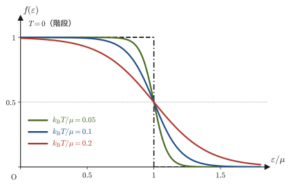
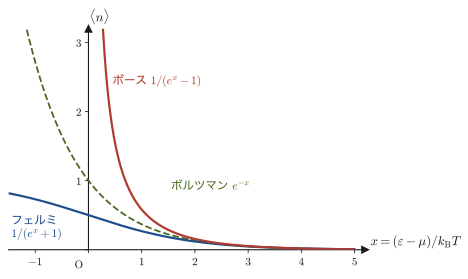
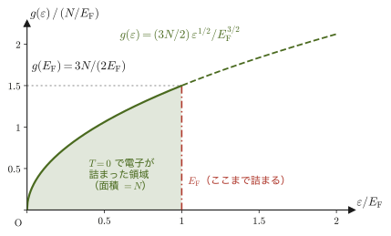
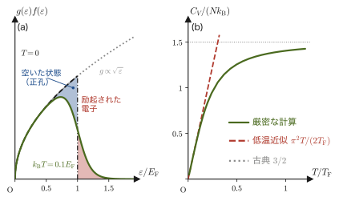
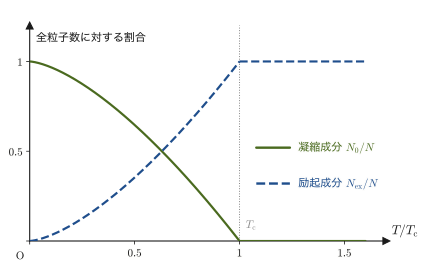
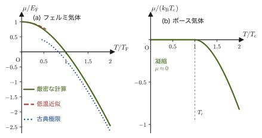

第52章グランドカノニカル分布と量子統計 — フェルミ分布とボース分布
前章までは，注目する系が熱浴とエネルギーだけをやりとりし，粒子数 $N$ はつねに一定である——カノニカル分布——という設定を扱ってきた．しかし現実には，粒子そのものが出入りする系がたくさんある．金属の中の伝導電子は，ある体積に何個入っているかを固定するより，出入りする電子の平均を考えるほうが自然である．半透膜で仕切られた2つの溶液のあいだでは，物質が拡散していく．この章では，熱浴に加えて粒子浴（粒子の貯蔵庫）とも接した系を考え，カノニカル分布を「粒子数もゆらぐ」形に拡張する．これがグランドカノニカル分布である．
この拡張によって，高校物理には出てこない新しい量化学ポテンシャル $\mu$ が自然に現れる．温度が「エネルギーの出入りしやすさ」を決める量であるのと同じように，$\mu$ は「粒子の出入りしやすさ」を決める量である（$\mu$ の高いほうから低いほうへ粒子が流れる）．
この分布は，電子や光子のような同種粒子（区別のつかない同じ粒子）を扱うときに真価を発揮する．同種粒子は，1つの量子状態に1個しか入れないフェルミ粒子（電子など．パウリの排他原理）と，何個でも入れるボース粒子（光子，ヘリウム4原子など）に分かれる．「1つのエネルギー準位を，それ自体が小さなグランドカノニカル系とみなす」というただ1つの考えから，新しい原理を加えずに，フェルミ＝ディラック分布とボース＝アインシュタイン分布を導く．高校で習った理想気体，電子配置（K殻に2個まで），固体の比熱 $3R$ が，ここでひとつにつながる：金属中の電子の比熱が古典値よりずっと小さい理由と，極低温のボース粒子に起こるボース＝アインシュタイン凝縮が，この章の到達点である．
- 熱浴とのテイラー展開の議論（第49・50章）を粒子数についても行い，開いた系の確率分布 $P_{j,N}\propto e^{-\beta(E_j-\mu N)}$（グランドカノニカル分布）を導く
- 大分配関数 $\Xi$ とグランドポテンシャル $J=-k_{\mathrm B}T\ln\Xi=-pV$ を定義し，そこから平均粒子数 $\langle N\rangle$ や圧力といったマクロな量を取り出す処方箋を得る
- 化学ポテンシャル $\mu$ の熱力学的な意味（粒子1個を増やすのに必要な自由エネルギー，粒子が流れる向きを決める量）と，古典理想気体での具体形 $\mu=k_{\mathrm B}T\ln(n\lambda_{\mathrm T}^3)$ を理解する
- フェルミ粒子・ボース粒子という同種粒子の量子統計的な区別（パウリの排他原理は量子力学の結果として与える）と，占有数という考え方を理解する
- 「1つのエネルギー準位＝極小のグランドカノニカル系」という考え方から，フェルミ＝ディラック分布 $\langle n_\varepsilon\rangle=1/(e^{\beta(\varepsilon-\mu)}+1)$ とボース＝アインシュタイン分布 $\langle n_\varepsilon\rangle=1/(e^{\beta(\varepsilon-\mu)}-1)$ を導出し，高温・低密度極限でどちらもボルツマン分布に帰着することを確認する
- 箱の中に閉じ込められた粒子の定在波を数え上げることで3次元の状態密度 $g(\varepsilon)\propto\sqrt\varepsilon$ を導き，自由電子気体のフェルミエネルギー $E_{\mathrm F}=\dfrac{\hbar^2}{2m}(3\pi^2n)^{2/3}$（銅で約7 eV）を求める
- 縮退フェルミ気体の比熱が温度に比例すること（結果とその物理的な理由）と，ボース＝アインシュタイン凝縮の転移温度・その実現例（液体ヘリウム4のλ点，1995年のアルカリ原子気体）を知る
もとにしたノート：本章はノートにない内容を補った章である．関連するノート：望月泰英『物理学ノート 統計力学』（手書き講義ノート），p. 9（カノニカル・アンサンブルの定義式）．
52.1 開いた系とグランドカノニカル分布の導出
まず，具体的な場面から始めよう．室温・$1\ \mathrm{atm}$ の空気の中に，一辺 $1\ \mu\mathrm m$（体積 $10^{-18}\ \mathrm{m^3}$）の目に見えない立方体を考える．中には分子が平均で約 $2.4\times10^{7}$ 個あるが，この立方体には壁がないので，分子は絶えず出入りしており，個数は約 $\pm5000$（$0.02\,\%$）の幅でゆらぐ（例題52.5）．このような「出入り自由な小領域」を，個数がゆらぐことも含めて統計的に扱いたい．小領域を注目する系 $s$，そのまわりの空気全体を貯蔵庫 $R$ と読み替えたものが，これから導く枠組みである（図52.1）．
第48章の等重率の原理（孤立系では，許されるすべての微視的状態が同じ確率で実現する）と，第49章 49.4節で行った「熱を通す壁で接触した2つの系」の議論を思い出そう．そこでは，系1と系2が全エネルギー $E=E_1+E_2$ を一定に保ったまま熱（エネルギー）だけをやりとりし，複合系の状態数 $\Omega_{\mathrm{total}}(E_1)=\Omega_1(E_1)\Omega_2(E-E_1)$ を最大にする分配が，圧倒的多数の微視的状態を占める（＝事実上必ず実現する）ことを見た．同じ発想を，片方の系が他方に比べて圧倒的に大きいという状況——大きいほうを熱浴（heat reservoir，温度 $T$ を保ったまま，小さい系にどれだけエネルギーを渡してもびくともしない巨大な貯蔵庫）とみなす——に当てはめると，小さい系がエネルギー $E_j$ のある1つの微視的状態 $j$ を実現する確率が，ボルツマン因子 $e^{-\beta E_j}$（$\beta\equiv1/(k_{\mathrm B}T)$）に比例するというカノニカル分布が得られる（第50章）．
本節では，この議論をもう一歩押し広げる．熱浴が系とエネルギーだけでなく粒子もやりとりできるとしたらどうなるだろうか——このような巨大な貯蔵庫を，熱浴と対比して粒子浴（particle reservoir）と呼ぶ．実際には熱浴と粒子浴は同じ1つの大きな系（以下，まとめて貯蔵庫 $R$ と呼ぶ）であってよく，$R$ は温度 $T$ と化学ポテンシャル $\mu$（52.3節で意味を詳しく説明する）という2つの量で特徴づけられる．着目する小さな系 $s$ は，$R$ と接した状態で，エネルギーだけでなく粒子数 $N$ も出入りできる——この設定を図52.1に示す．
全体（$s+R$）は孤立系であり，全エネルギー $E_{\mathrm{tot}}$ と全粒子数 $N_{\mathrm{tot}}$ は一定である．いま，系 $s$ がある1つの微視的状態——粒子数が $N$，エネルギーが $E_{j,N}$（同じ粒子数 $N$ でも，量子力学的にはいくつもの状態が許され，それを添字 $j$ で区別する）——にあるとしよう．このとき，貯蔵庫 $R$ に残されたエネルギーは $E_{\mathrm{tot}}-E_{j,N}$，粒子数は $N_{\mathrm{tot}}-N$ である．等重率の原理（孤立系 $s+R$ 全体のどの微視的状態も同じ確率で実現する）により，系 $s$ がこの特定の状態 $(j,N)$ を実現する確率は，$R$ がそのエネルギー・粒子数のもとで取りうる微視的状態の数 $\Omega_R(E_{\mathrm{tot}}-E_{j,N},\,N_{\mathrm{tot}}-N)$ に比例する：
$$ P_{j,N}\propto\Omega_R(E_{\mathrm{tot}}-E_{j,N},\,N_{\mathrm{tot}}-N) $$導出：グランドカノニカル分布 $P_{j,N}\propto e^{-\beta(E_{j,N}-\mu N)}$
$R$ が $s$ よりもはるかに大きいので，$E_{j,N}\ll E_{\mathrm{tot}}$，$N\ll N_{\mathrm{tot}}$ である．そこで，$\ln\Omega_R$ を，$R$ が全エネルギー・全粒子数をひとりで持っている状態 $(E_{\mathrm{tot}},N_{\mathrm{tot}})$ のまわりで，2変数のテイラー展開（大学数学 第6章 6.6節）する．1次の項までで十分よい近似になる（49.4節のイメージ：貯蔵庫が大きいほど，この種の近似はいよいよ正確になる）：
$$ \ln\Omega_R(E_{\mathrm{tot}}-E_{j,N},\,N_{\mathrm{tot}}-N)\approx\ln\Omega_R(E_{\mathrm{tot}},N_{\mathrm{tot}})-E_{j,N}\left(\pdiff{\ln\Omega_R}{E}\right)_{N}-N\left(\pdiff{\ln\Omega_R}{N}\right)_{E} $$（$R$ からエネルギー $E_{j,N}$ と粒子 $N$ 個を系 $s$ に貸し出した分だけ，$R$ 自身の変数がそれぞれ $E_{j,N},N$ だけ減る——これが，1次の項に付いているマイナス符号の意味である．偏微分は，貸し出す前の $R$ の状態 $(E_{\mathrm{tot}},N_{\mathrm{tot}})$ で評価する．）第1の偏微分は，定義49.2の温度の統計力学的定義 $1/T=(\partial S/\partial E)_{V,N}$（$S=k_{\mathrm B}\ln\Omega$ より $\partial\ln\Omega_R/\partial E=(1/k_{\mathrm B})\partial S_R/\partial E$）から，
$$ \left(\pdiff{\ln\Omega_R}{E}\right)_{N}=\frac{1}{k_{\mathrm B}}\left(\pdiff{S_R}{E}\right)_{V,N}=\frac1{k_{\mathrm B}T}=\beta $$である．第2の偏微分は，まだ名前を付けていない量である（定義49.3で，微視的状態の数から見た化学ポテンシャルとしてすでに現れている）ので，ここで整理しよう．開いた系の熱力学第1法則（第26章 26.7節で粒子1個あたりの形に書き直すと）$\dd U=T\dd S-p\dd V+\mu\,\dd N$ を $\dd S$ について解くと，
$$ \dd S=\frac1T\dd U+\frac{p}{T}\dd V-\frac{\mu}{T}\dd N $$となるので，$U,V$ を一定にして $N$ で偏微分すると $(\partial S/\partial N)_{U,V}=-\mu/T$．したがって，
$$ \left(\pdiff{\ln\Omega_R}{N}\right)_{E}=\frac1{k_{\mathrm B}}\left(\pdiff{S_R}{N}\right)_{E,V}=-\frac{\mu}{k_{\mathrm B}T}=-\beta\mu $$である．これが，化学ポテンシャル $\mu$ の統計力学的な定義——「エントロピーが粒子数の増加とともにどれだけ増えにくくなるか」を表す量——になる．2つの偏微分を代入すると，
$$ \ln\Omega_R(E_{\mathrm{tot}}-E_{j,N},N_{\mathrm{tot}}-N)\approx\underbrace{\ln\Omega_R(E_{\mathrm{tot}},N_{\mathrm{tot}})}_{\text{定数（$j,N$によらない）}}-\beta E_{j,N}-N(-\beta\mu)=\text{定数}-\beta\bigl(E_{j,N}-\mu N\bigr) $$両辺の指数をとると $\Omega_R(E_{\mathrm{tot}}-E_{j,N},N_{\mathrm{tot}}-N)\propto e^{-\beta(E_{j,N}-\mu N)}$．これが $P_{j,N}$ に比例するのだから，
\begin{equation} P_{j,N}\propto e^{-\beta(E_{j,N}-\mu N)} \label{eq:52-gc-prob} \end{equation}（導出終わり）
イメージ：カノニカル分布からの自然な拡張
式 \eqref{eq:52-gc-prob} は，第50章のカノニカル分布 $P_j\propto e^{-\beta E_j}$ に，指数の肩へ $+\beta\mu N$ という項が1つ付け加わっただけの形をしている．やっていることは何も新しくない——「エネルギーだけを交換できる熱浴」を「エネルギーと粒子数の両方を交換できる貯蔵庫」に置き換え，テイラー展開する変数を $E$ だけでなく $N$ にも増やしただけである．指数の肩の $-\beta E_{j,N}$ は「エネルギーが高い状態ほど実現しにくい」，新しく付け加わった $+\beta\mu N$ は「化学ポテンシャル $\mu$ が高いとき，粒子数 $N$ が大きい状態ほど実現しやすくなる（$\mu$ が低いとき，あるいは負のときはその逆）」ことを表している．次節では，この分布を正しく規格化し，そこから圧力や平均粒子数といったマクロな量を取り出す枠組みを作る．
例題52.1 吸着サイトのグランドカノニカル分布（ラングミュア吸着のミニチュア）
固体表面に，気体分子を1個だけ吸着できる小さな「吸着サイト」が1つあるとする．サイトが空のとき，エネルギーは $0$，粒子数は $N=0$．サイトに分子が1個吸着しているとき，エネルギーは $-\varepsilon_0$（$\varepsilon_0\gt0$，吸着によって系が安定化するので負のエネルギー），粒子数は $N=1$ である．このサイトを，温度 $T$，化学ポテンシャル $\mu$ の気体（吸着分子の供給源）と接触した，グランドカノニカルな系とみなす．(1) 空である確率 $P_{\text{空}}$ と，分子が吸着している確率 $P_{\text{吸着}}$ の比を求めよ．(2) $\mu$ が非常に大きい（気体の圧力が非常に高い）とき，どちらの確率が大きくなるか，式から読み取れ．
解答 (1) 式 \eqref{eq:52-gc-prob} を，$(j,N)=(\text{空},0)$ と $(j,N)=(\text{吸着},1)$ の2つの状態に適用する．空の状態は $E_{j,N}=0,N=0$ なので $P_{\text{空}}\propto e^{-\beta(0-\mu\cdot0)}=e^{0}=1$．吸着した状態は $E_{j,N}=-\varepsilon_0,N=1$ なので $P_{\text{吸着}}\propto e^{-\beta(-\varepsilon_0-\mu\cdot1)}=e^{\beta(\varepsilon_0+\mu)}$．したがって，
$$ \frac{P_{\text{吸着}}}{P_{\text{空}}}=e^{\beta(\varepsilon_0+\mu)}=e^{(\varepsilon_0+\mu)/(k_{\mathrm B}T)} $$(2) $\mu$ が大きいほど（気体の圧力・密度が高いほど，52.3節で見るように $\mu$ は増加する），指数 $\beta(\varepsilon_0+\mu)$ は大きくなり，$P_{\text{吸着}}/P_{\text{空}}\to\infty$：サイトはほぼ確実に分子で埋まる．逆に $\mu\to-\infty$（気体が極めて希薄）では比は $0$ に近づき，サイトはほぼ確実に空になる．これは直感（気体の圧力が高いほど，表面への吸着が進む）と完全に一致しており，$\mu$ が「粒子の押し込みやすさ」を表す量であることを具体的に示す最初の例になっている（この吸着サイトの統計は，52.5節で導くフェルミ＝ディラック分布の1準位版そのものであることに，あとで気づくはずである）．
52.2 大分配関数 $\Xi$ とグランドポテンシャル
式 \eqref{eq:52-gc-prob} の比例関係を等式にするには，全確率が1になるように規格化する定数が必要である．カノニカル分布での分配関数 $Z=\sum_je^{-\beta E_j}$（第50章）にならい，粒子数 $N$ のすべての値と，各 $N$ でのすべての状態 $j$ について和をとった量を導入する．
定義52.1 大分配関数 $\Xi$
\begin{equation} \Xi(T,V,\mu)\equiv\sum_{N=0}^{\infty}\sum_j e^{-\beta(E_{j,N}-\mu N)} \label{eq:52-Xi-def} \end{equation}を大分配関数（grand partition function，$\Xi$ はギリシャ大文字のクサイ，グザイと読む）と呼ぶ．これを使うと，式 \eqref{eq:52-gc-prob} は等式 $P_{j,N}=e^{-\beta(E_{j,N}-\mu N)}/\Xi$ になる（$\sum_{N,j}P_{j,N}=1$ を満たすことが，$\Xi$ の定義そのものから確かめられる）．
式 \eqref{eq:52-Xi-def}の $N$ についての和のうち，固定した $N$ についての $j$ の和 $\sum_je^{-\beta E_{j,N}}$ は，まさに「粒子数 $N$ ぴったりに固定したときのカノニカル分配関数」$Z_N(T,V)\equiv\sum_je^{-\beta E_{j,N}}$（第50章の $Z$ を，粒子数 $N$ を明示して書いたもの）にほかならない．したがって，
\begin{equation} \Xi=\sum_{N=0}^{\infty}e^{\beta\mu N}Z_N(T,V) \label{eq:52-Xi-ZN} \end{equation}と書き直せる．しばしば $z\equiv e^{\beta\mu}$（フガシティー，fugacity，または活動度）という略記を使い，$\Xi=\sum_N z^NZ_N$ と簡潔に書く（$z$ は $\mu$ を指数関数の形に書き直しただけの量で，新しい物理を表すわけではない）．
52.2.1 平均粒子数と大分配関数
$\Xi$ の $\mu$ による偏微分は，和の中身を1項ずつ微分してよい（無限級数の項別微分，収束する範囲で正当化される）ので，直接計算できる．
導出：$\langle N\rangle=k_{\mathrm B}T\left(\pdiff{\ln\Xi}{\mu}\right)_{T,V}$
式 \eqref{eq:52-Xi-def}の右辺を $\mu$ で偏微分すると（$T,V$ を一定に保つ），指数関数の微分公式より各項に $\beta N$ が掛かって降りてくる：
$$ \left(\pdiff{\Xi}{\mu}\right)_{T,V}=\sum_{N,j}\beta N\,e^{-\beta(E_{j,N}-\mu N)} $$両辺を $\Xi$ で割ると，右辺は $\beta\sum_{N,j}N\,P_{j,N}=\beta\langle N\rangle$（平均粒子数の定義そのもの）になる．左辺は $(1/\Xi)(\partial\Xi/\partial\mu)=\partial\ln\Xi/\partial\mu$（合成関数の微分，$\dd(\ln\Xi)/\dd\Xi=1/\Xi$）である．したがって，
$$ \left(\pdiff{\ln\Xi}{\mu}\right)_{T,V}=\beta\langle N\rangle \qquad\Longrightarrow\qquad \langle N\rangle=\frac1\beta\left(\pdiff{\ln\Xi}{\mu}\right)_{T,V}=k_{\mathrm B}T\left(\pdiff{\ln\Xi}{\mu}\right)_{T,V} $$（導出終わり）
この関係は，カノニカル分布での $U=-\partial\ln Z/\partial\beta$（第50章，対数微分でマクロな量を取り出す処方箋）と，まったく同じ発想でできている——対数を微分するだけで，統計的にゆらぐ量の平均値が手に入る．以下では，$\langle N\rangle$ を単に $N$ と書く（第51章の $U$ が実は $\langle E\rangle$ であったのと同様，熱力学的極限で相対的なゆらぎが無視できるほど小さいため）．
52.2.2 グランドポテンシャル $J$
カノニカル分布で自由エネルギー $A=-k_{\mathrm B}T\ln Z$ を定義したのと同様に，$\Xi$ の対数から新しい熱力学ポテンシャルを定義する．
定義52.2 グランドポテンシャル $J$
\begin{equation} J(T,V,\mu)\equiv-k_{\mathrm B}T\ln\Xi \label{eq:52-J-def} \end{equation}をグランドポテンシャル（grand potential，教科書によっては大きなオメガ $\Omega$ や $\Phi_{\mathrm G}$ と書かれることもあるが，本書では熱力学的重率 $\Omega(E)$（第49章）と記号が衝突するのを避けて $J$ を使う）と呼ぶ．前項の結果を書き直すと，
\begin{equation} N=-\left(\pdiff{J}{\mu}\right)_{T,V} \label{eq:52-N-from-J} \end{equation}となる（$\ln\Xi=-J/(k_{\mathrm B}T)$ を代入し，$-k_{\mathrm B}T\times\dfrac1{k_{\mathrm B}T}=-1$ に注意する）．
$J$ が $A$ や $pV$ とどう結びつくかを見ておこう．式 \eqref{eq:52-Xi-ZN} の和は，カノニカル分配関数 $Z_N=e^{-\beta A(T,V,N)}$（$A$ の定義そのもの）を使うと $\Xi=\sum_Ne^{\beta\mu N}e^{-\beta A(T,V,N)}=\sum_Ne^{-\beta[A(T,V,N)-\mu N]}$ と書ける．49.4節で見た「圧倒的多数の状態がある1点に集中する」議論とまったく同じ理由（$N\sim10^{23}$ 個の粒子からなる巨視的な系では，この和も，指数の肩 $A(T,V,N)-\mu N$ を最小にする，ある1つの値 $N=N^*$ のまわりのごくわずかな範囲からの寄与が支配的になる）により，和はその最大項だけで近似できる：
$$ \Xi\approx e^{-\beta[A(T,V,N^*)-\mu N^*]} \qquad\Longrightarrow\qquad J=-k_{\mathrm B}T\ln\Xi\approx A(T,V,N^*)-\mu N^* $$（項の数は高々 $\sim N$ 個なので，最大項からのずれの効果は，対数をとっても $\ln N$ 程度にしかならず，指数の肩の大きさ $\sim N$ に比べて無視できる．最大を与える $N^*$ は，52.3.1節で決まる（条件 $\partial A/\partial N=\mu$）．）
すなわち，$J=A-\mu N$（$N$ は平均粒子数）である．これは，第31章 31.5節で学んだルジャンドル変換の一つである．$A=U-TS$ が「$U(S,V,N)$ の変数 $S$ を，その共役量 $T$ に取り替える」変換であったのと同じ形で，$J=A-\mu N$ は「$A(T,V,N)$ の変数 $N$ を，その共役量 $\mu$ に取り替える」変換になっている（自然な変数とその共役量の積を引く，という形が共通である）．
導出：$J=-pV$ — グランドポテンシャルは示量変数 $V$ だけに比例する
$\dd A=-S\dd T-p\dd V+\mu\dd N$（第30章の $\dd A=-S\dd T-p\dd V$ に，26.7.1節の開いた系の項 $\mu\dd N$ を加えた形．導き方は次節で示す）と $J=A-\mu N$ の全微分をとると，
$$ \dd J=\dd A-\mu\dd N-N\dd\mu=(-S\dd T-p\dd V+\mu\dd N)-\mu\dd N-N\dd\mu=-S\dd T-p\dd V-N\dd\mu $$すなわち $J$ の自然な変数は $(T,V,\mu)$ であり，$p=-(\partial J/\partial V)_{T,\mu}$ が成り立つ．ここで，$T,\mu$ はどちらも示強変数（系を2つ合わせても値が変わらない量）である一方，$V$ は示量変数（系を2つ合わせると2倍になる量）であることを思い出そう．同じ物質を，同じ $T,\mu$ のまま体積だけ $\lambda$ 倍（$\lambda>0$）した系を考えると，示量性より $J$ も $\lambda$ 倍になるはずである：
$$ J(T,\lambda V,\mu)=\lambda J(T,V,\mu)\qquad(\text{すべての}\ \lambda>0\ \text{について}) $$これは，$J$ が $V$ について1次同次関数であることを意味する．両辺を $\lambda$ で微分し，$\lambda=1$ を代入すると（左辺は合成関数の微分でチェーンルールにより $V\times(\partial J/\partial V)_{T,\mu}$ になる），
$$ V\left(\pdiff{J}{V}\right)_{T,\mu}=J(T,V,\mu) $$を得る．先ほど求めた $(\partial J/\partial V)_{T,\mu}=-p$ を代入すると，
\begin{equation} J=-pV \label{eq:52-J-pV} \end{equation}（導出終わり）
定理52.1 大分配関数とグランドポテンシャル
大分配関数 $\Xi=\sum_{N,j}e^{-\beta(E_{j,N}-\mu N)}$ から定義されるグランドポテンシャル $J=-k_{\mathrm B}T\ln\Xi$ は，次の関係を満たす．
\begin{equation} J=-k_{\mathrm B}T\ln\Xi=A-\mu N=-pV, \qquad N=k_{\mathrm B}T\left(\pdiff{\ln\Xi}{\mu}\right)_{T,V}, \qquad p=-\left(\pdiff{J}{V}\right)_{T,\mu} \label{eq:52-thm-J} \end{equation}この3つの式が，本章の以降すべての計算の出発点になる——$\Xi$ さえ計算できれば，そこから平均粒子数・圧力・（対数微分をもう一つ増やせば）平均エネルギーまで，すべて機械的に取り出せる．
注意：$J=-pV$ が成り立つための条件
$J=-pV$ は，$J$ が体積 $V$ に比例するという示量性を使って導いた．したがって，容器の壁や界面の影響が無視できる，十分大きく一様な系（熱力学的極限）でしか成り立たない．ナノ粒子や薄い膜のように，表面の寄与が無視できない系では，$J$ には表面の項が加わって $J=-pV$ は破れる．また，$J=-pV$ を使うと $\Xi$ さえ計算できれば状態方程式 $p=k_{\mathrm B}T\ln\Xi/V$ が一発で得られる，という便利な式が手に入る（次の例題と 52.3 節で実際に使う）．
例題52.2 古典理想気体の大分配関数
第51章 51.1節で求めた単原子分子理想気体の1粒子分配関数 $Z_1=V(2\pi mk_{\mathrm B}T/h^2)^{3/2}=V/\lambda_{\mathrm T}^3$（$\lambda_{\mathrm T}$ は熱的ド・ブロイ波長）と，$N$粒子分配関数 $Z_N=Z_1^N/N!$（同章）を使って，古典理想気体の大分配関数 $\Xi$ を求めよ．
解答 式 \eqref{eq:52-Xi-ZN}（フガシティー $z=e^{\beta\mu}$ を使う形）に $Z_N=Z_1^N/N!$ を代入すると，
$$ \Xi=\sum_{N=0}^{\infty}z^N\frac{Z_1^N}{N!}=\sum_{N=0}^{\infty}\frac{(zZ_1)^N}{N!} $$これは，指数関数のテイラー展開（マクローリン展開）$e^x=\sum_{N=0}^{\infty}x^N/N!$（大学数学 第4章）そのもの（$x=zZ_1$ とおいた形）である．したがって，
\begin{equation} \Xi_{\text{理想気体}}=e^{zZ_1}=\exp\bigl(e^{\beta\mu}Z_1\bigr) \label{eq:52-Xi-idealgas} \end{equation}と，きれいな閉じた形（無限級数ではなく1つの指数関数）に求まる．これを使うと，式 \eqref{eq:52-thm-J} より $N=k_{\mathrm B}T\,\partial\ln\Xi/\partial\mu=k_{\mathrm B}T\cdot\beta zZ_1=zZ_1=e^{\beta\mu}Z_1$（$\ln\Xi=zZ_1$ を $\mu$ で微分すると，$z=e^{\beta\mu}$ の微分 $\partial z/\partial\mu=\beta z$ より $\partial(zZ_1)/\partial\mu=\beta zZ_1$ になることを使った）．この関係 $N=e^{\beta\mu}Z_1$ を次節で化学ポテンシャルの具体形を求めるのに使う．
52.3 化学ポテンシャル $\mu$ の意味
ここまで $\mu$ を「エントロピーの粒子数微分 $-\mu/T=(\partial S/\partial N)_{U,V}$」として導入した．しかし，エントロピーはやや扱いにくい量なので，$\mu$ をもっと手触りのある形で理解しておこう．出発点は，前節で得た $J=A-\mu N$ である．
52.3.1 $\mu=(\partial A/\partial N)_{T,V}$ — 粒子を1個増やすのに必要な自由エネルギー
52.2節で，$\Xi=\sum_Ne^{-\beta[A(T,V,N)-\mu N]}$ の和は，指数の肩 $A(T,V,N)-\mu N$ が最小になる $N=N^*$ の近くの項が支配することを見た．関数 $A(T,V,N)-\mu N$ が $N^*$ で最小になる条件は，$N$ で偏微分して $0$ とおくこと，すなわち $(\partial A/\partial N)_{T,V}-\mu=0$ である（極値の条件，大学数学 第6章 6.2節）．これが化学ポテンシャルの熱力学的な定義そのものである．
定義52.3 化学ポテンシャル $\mu$（熱力学的な定義）
\begin{equation} \mu\equiv\left(\pdiff{A}{N}\right)_{T,V}=\left(\pdiff{U}{N}\right)_{S,V}=\left(\pdiff{G}{N}\right)_{T,p}=-T\left(\pdiff{S}{N}\right)_{U,V} \label{eq:52-mu-def} \end{equation}温度 $T$ と体積 $V$ を一定に保ったまま粒子を1個だけ増やしたときの，ヘルムホルツ自由エネルギー $A$ の増加量．ここでの $N$ は粒子の個数なので，$\mu$ の単位は粒子1個あたりのエネルギー $\mathrm J$ である（26.7.1節のように物質量 $n\ [\mathrm{mol}]$ で数えれば $\mu\ [\mathrm{J/mol}]$ となり，両者は $N_{\mathrm A}$ 倍だけ違う）．
導出：定義52.3の4つの表式が同じ量であること
$\dd U=T\dd S-p\dd V+\mu\dd N$（26.7.1節）を出発点にする．$S,V$ を一定にして $N$ で偏微分すれば $(\partial U/\partial N)_{S,V}=\mu$．次に $A=U-TS$ の全微分（積の微分公式）は
$$ \dd A=\dd U-T\dd S-S\dd T=(T\dd S-p\dd V+\mu\dd N)-T\dd S-S\dd T=-S\dd T-p\dd V+\mu\dd N $$となるので，$T,V$ を一定にして $N$ で偏微分すれば $(\partial A/\partial N)_{T,V}=\mu$．同様に $G=U-TS+pV$ からは $\dd G=-S\dd T+V\dd p+\mu\dd N$ となり，$(\partial G/\partial N)_{T,p}=\mu$．最後に，前節で $\dd S=\dfrac1T\dd U+\dfrac pT\dd V-\dfrac\mu T\dd N$ から得たとおり $(\partial S/\partial N)_{U,V}=-\mu/T$，すなわち $\mu=-T(\partial S/\partial N)_{U,V}$ である．どの量を固定して粒子を1個増やすかで見かけは違うが，すべて同じ $\mu$ を与える．
（導出終わり）
導出：オイラーの関係式 $U=TS-pV+\mu N$ と，$J=-pV$ の別証明
内部エネルギー $U(S,V,N)$ は，3つの変数がすべて示量変数なので，$S,V,N$ を同時に $\lambda$ 倍すれば $U$ も $\lambda$ 倍になる（1次同次）．52.2節の $J=-pV$ の導出と同じく $\lambda$ で微分して $\lambda=1$ とおくと，
$$ U=S\left(\pdiff US\right)_{V,N}+V\left(\pdiff UV\right)_{S,N}+N\left(\pdiff UN\right)_{S,V}=TS-pV+\mu N $$となる．これより $G=U-TS+pV=\mu N$，すなわち1成分系では $\mu$ は粒子1個あたりのギブスエネルギー（$\mu=G/N$）である．さらに $J=A-\mu N=U-TS-\mu N=-pV$ となり，52.2節の結果と一致する．
（導出終わり）
52.3.2 $\mu$ の高いほうから低いほうへ粒子が流れる
熱いものから冷たいものへ熱が流れ，電位の高いところから低いところへ正の電荷が流れるのと同じ構造が，粒子についても成り立つ．温度 $T$ が等しい2つの容器 1，2 を，粒子が通れる細い管でつなぐ（図52.2）．全体は温度 $T$ の熱浴に浸してあり，体積 $V$ と全粒子数 $N_1+N_2$ は一定とする．このとき全体のヘルムホルツ自由エネルギー $A=A_1+A_2$ は，自発変化で減少する一方である（第30章 30.4節：$T,V$ 一定の変化の向き）．容器 1 から容器 2 へ $\dd N_1$ 個の粒子が移ると $\dd N_2=-\dd N_1$ なので，定義52.3より
$$ \dd A=\mu_1\dd N_1+\mu_2\dd N_2=(\mu_1-\mu_2)\dd N_1\le0 $$である．$\mu_1\gt\mu_2$ なら $\dd N_1\lt0$（容器 1 の粒子が減る），すなわち粒子は化学ポテンシャルの高いほうから低いほうへ流れ，$\mu_1=\mu_2$ になったところで流れが止まる（平衡）．
「エネルギーにとっての温度，粒子にとっての化学ポテンシャル」
2つの系が何かをやりとりできるとき，やりとりされる量に対応する示強変数が等しくなるまで，その量は流れる．これまでに学んだ例をまとめると，次の表になる．
| やりとりされる量 | 平衡で等しくなる量 | 流れる向き |
|---|---|---|
| エネルギー（熱） | 温度 $T$ | 高温 → 低温 |
| 体積（壁の移動） | 圧力 $p$ | 高圧側が膨らむ |
| 電荷 | 電位 $\varphi$ | 高電位 → 低電位（正電荷） |
| 粒子 | 化学ポテンシャル $\mu$ | 高 $\mu$ → 低 $\mu$ |
これは，49.4節と49.5節で見た「エントロピーを最大にする分け方」の言い換えである（エネルギー交換で $T$ が，体積交換で $p$ が，粒子交換で $\mu$ が等しくなる）．
52.3.3 古典理想気体の化学ポテンシャル
例題52.2で，単原子分子理想気体の大分配関数 $\Xi=\exp(zZ_1)$ と，平均粒子数 $N=zZ_1$ が求まっていた．$Z_1=V/\lambda_{\mathrm T}^3$（第51章 51.1節）を使い，粒子数密度 $n\equiv N/V$ を導入すると，$N=e^{\beta\mu}V/\lambda_{\mathrm T}^3$ より
$$ e^{\beta\mu}=\frac{N\lambda_{\mathrm T}^3}{V}=n\lambda_{\mathrm T}^3 $$となる．両辺の対数をとって $k_{\mathrm B}T$ を掛ければ，化学ポテンシャルが求まる．
公式52.1 古典理想気体の化学ポテンシャル
\begin{equation} \mu=k_{\mathrm B}T\ln\bigl(n\lambda_{\mathrm T}^3\bigr),\qquad \lambda_{\mathrm T}=\frac{h}{\sqrt{2\pi mk_{\mathrm B}T}},\qquad n=\frac NV=\frac p{k_{\mathrm B}T} \label{eq:52-mu-ideal} \end{equation}フガシティー $z=e^{\beta\mu}$ は $z=n\lambda_{\mathrm T}^3$ であり，「1辺 $\lambda_{\mathrm T}$ の立方体1個あたりに粒子が平均何個いるか」を表す．
これは，第49章 49.6節でザックール＝テトローデの式の偏微分から得た（第51章 51.1節の定理51.2でも $A$ から得た） $\mu=-k_{\mathrm B}T\ln\left\{\dfrac VN\left(\dfrac{2\pi mk_{\mathrm B}T}{h^2}\right)^{3/2}\right\}$ とまったく同じ式である（$\dfrac VN=\dfrac1n$，$\left(\dfrac{2\pi mk_{\mathrm B}T}{h^2}\right)^{3/2}=\dfrac1{\lambda_{\mathrm T}^3}$ なので，対数の中身の逆数をとれば符号が反転する）．ミクロカノニカル分布（エネルギー一定）から出発しても，グランドカノニカル分布（$\mu$ 一定）から出発しても，同じ $\mu$ が得られる——これが，熱力学的極限で各分布が等価であることの一つの表れである．
イメージ：$\mu$ はなぜ負で，なぜ密度とともに大きくなるのか
式 \eqref{eq:52-mu-ideal} の対数の中身 $n\lambda_{\mathrm T}^3$ が $1$ より小さい（分子の量子的な広がり $\lambda_{\mathrm T}$ が分子間の距離より短く，古典的に扱える）とき，$\mu$ は負になる．これは，定義49.3の言い方をすれば「分子を1個加えるとエントロピーが増える（$-\mu/T=(\partial S/\partial N)_{U,V}\gt0$）」ことの表れである．うすい気体には，分子1個が動き回れる場所がたっぷり残っているので，加えるのに余計な手間がかからない．濃くなる（$n$ が大きくなる）と場所が減って，1個加えるコストが増える——つまり $\mu$ は上昇する．$\mu$ が負であることは，粒子が「エネルギーの意味で」損をするのではなく，「1個あたりの自由に動ける広さが十分ある」ことを意味している．真空（$n\to0$）では $\mu\to-\infty$ であり，「粒子が非常に入りやすい」状態に対応する．
注意：等温変化では $\mu$ は $p$ と対数の関係にある
式 \eqref{eq:52-mu-ideal} に $n=p/(k_{\mathrm B}T)$ を入れ，同じ温度の2つの状態を比べると $\mu_2-\mu_1=k_{\mathrm B}T\ln(p_2/p_1)$ となる（$\lambda_{\mathrm T}$ は温度だけで決まるので相殺する）．圧力を2倍にしても $\mu$ は2倍になるのではなく，$k_{\mathrm B}T\ln2$ だけ増える．化学の教科書では，基準の圧力 $p^\circ$（たとえば $1\ \mathrm{bar}$）での値 $\mu^\circ(T)$ を使って $\mu=\mu^\circ(T)+k_{\mathrm B}T\ln(p/p^\circ)$（$\mu$ を $\mathrm{J/mol}$ で測るなら $RT\ln(p/p^\circ)$）と書く．
例題52.3 窒素ガスで $\mu=0$ になるのはいつか — 古典理想気体の式の限界
窒素分子 $\mathrm N_2$（質量 $m=28.0134\times1.6605\times10^{-27}\ \mathrm{kg}=4.652\times10^{-26}\ \mathrm{kg}$）の気体が $T=300\ \mathrm K$，$p=1\ \mathrm{atm}=101\,325\ \mathrm{Pa}$ にあるとき，並進運動だけを考えると $n=p/(k_{\mathrm B}T)=2.446\times10^{25}\ \mathrm{m^{-3}}$，$\lambda_{\mathrm T}=1.904\times10^{-11}\ \mathrm m$ で，式 \eqref{eq:52-mu-ideal} の $\mu$ は $-0.403\ \mathrm{eV}$（$-15.6\,k_{\mathrm B}T$）になる（この値は，49.6節のザックール＝テトローデの式から求めた値と一致する）．この気体で，(1) $T=300\ \mathrm K$ のまま圧力を上げると，$\mu=0$（$n\lambda_{\mathrm T}^3=1$）になるのは何 $\mathrm{atm}$ のときか．(2) $p=1\ \mathrm{atm}$ のまま冷やすと，$\mu=0$ になるのは何 $\mathrm K$ のときか．(3) 窒素の沸点 $77\ \mathrm K$ での $n\lambda_{\mathrm T}^3$ を求め，古典理想気体の式が使えなくなる原因について考えよ．
解答 まず，$T=300\ \mathrm K$，$1\ \mathrm{atm}$ での $z=n\lambda_{\mathrm T}^3=2.446\times10^{25}\times(1.904\times10^{-11})^3=1.69\times10^{-7}$ である．
(1) $n\lambda_{\mathrm T}^3=1$ となる数密度は $n=1/\lambda_{\mathrm T}^3=1/(1.904\times10^{-11}\ \mathrm m)^3=1.45\times10^{32}\ \mathrm{m^{-3}}$ である．圧力は $p=nk_{\mathrm B}T=1.45\times10^{32}\times4.142\times10^{-21}\ \mathrm{Pa}=6.0\times10^{11}\ \mathrm{Pa}$，すなわち約 $5.9\times10^{6}\ \mathrm{atm}$ である（$1\ \mathrm{atm}$ の約 $600$ 万倍）．
(2) $p$ 一定のとき $n=p/(k_{\mathrm B}T)\propto T^{-1}$，$\lambda_{\mathrm T}^3\propto T^{-3/2}$ なので $z=n\lambda_{\mathrm T}^3\propto T^{-5/2}$ である．$z=1.69\times10^{-7}\,(T/300\ \mathrm K)^{-5/2}=1$ を解くと $T=300\ \mathrm K\times(1.69\times10^{-7})^{2/5}=0.59\ \mathrm K$ である．
(3) $T=77\ \mathrm K$（$1\ \mathrm{atm}$）では $z=1.69\times10^{-7}\times(77/300)^{-5/2}\approx5\times10^{-6}$ で，$1$ よりはるかに小さい．つまり，窒素は $\mu=0$ に近づくよりずっと手前，量子的な広がり $\lambda_{\mathrm T}\approx3.8\times10^{-11}\ \mathrm m$ が分子間隔 $(k_{\mathrm B}T/p)^{1/3}\approx2.2\times10^{-9}\ \mathrm m$ よりはるかに短いうちに，分子間力によって液化してしまう．窒素ガスで古典理想気体の式が使えなくなる原因は量子効果ではなく分子間力であり，量子効果（$n\lambda_{\mathrm T}^3\sim1$）が本質的になるのは，分子間力が弱く軽いヘリウムや，質量の小さい電子などの場合である（52.7節）．
注意 ここでは分子の内部運動（回転・振動）と結合エネルギーを無視し，並進運動だけの化学ポテンシャルを考えた．2原子分子では，並進の $Z_1=V/\lambda_{\mathrm T}^3$ に内部分配関数 $z_{\mathrm{int}}$ が掛かるので $\mu=k_{\mathrm B}T\ln(n\lambda_{\mathrm T}^3/z_{\mathrm{int}})$ となる．室温の $\mathrm N_2$ の回転では $z_{\mathrm{rot}}=T/(2\theta_{\mathrm{rot}})\approx50$（回転温度 $\theta_{\mathrm{rot}}=2.88\ \mathrm K$，2は2つの原子が同じ分子の対称数）なので，$\mu$ はさらに $k_{\mathrm B}T\ln50\approx0.10\ \mathrm{eV}$ 下がる．また，$\mu$ の値そのものは，エネルギーの原点（結合エネルギーを含めるかどうか）の取り方にも依存する．
例題52.4 $J=-pV$ から理想気体の状態方程式を再導出する
理想気体の大分配関数 $\Xi=\exp(zZ_1)$（式 \eqref{eq:52-Xi-idealgas}），$Z_1=V/\lambda_{\mathrm T}^3$ から出発して，$p=-(\partial J/\partial V)_{T,\mu}$ と $J=-pV$ のそれぞれから，状態方程式 $pV=Nk_{\mathrm B}T$ を導け．
解答 $\ln\Xi=zZ_1=e^{\beta\mu}V/\lambda_{\mathrm T}^3$ なので，$J=-k_{\mathrm B}T\ln\Xi=-k_{\mathrm B}T\,e^{\beta\mu}V/\lambda_{\mathrm T}^3$．$T,\mu$ を固定すると $\lambda_{\mathrm T}$ も $e^{\beta\mu}$ も定数なので，$J$ は $V$ に比例する．したがって
$$ p=-\left(\pdiff JV\right)_{T,\mu}=\frac{k_{\mathrm B}T\,e^{\beta\mu}}{\lambda_{\mathrm T}^3} $$一方，平均粒子数は $N=zZ_1=e^{\beta\mu}V/\lambda_{\mathrm T}^3$ なので $e^{\beta\mu}/\lambda_{\mathrm T}^3=N/V$．これを $p$ に代入すると $p=k_{\mathrm B}T\,N/V$，すなわち $pV=Nk_{\mathrm B}T$．別の道として，$J=-pV$ から $pV=-J=k_{\mathrm B}T\ln\Xi=k_{\mathrm B}T\,zZ_1=k_{\mathrm B}T\,N$ と，直接同じ式が出る．どちらの道でも，高校物理の状態方程式が（第51章のカノニカル分布からの導出とは別の道で）再現された．
52.3.4 粒子数のゆらぎ — なぜ $\langle N\rangle$ を $N$ と書いてよいのか
グランドカノニカル分布では粒子数 $N$ が確率的に変わる．それでも $N$ を一定値のように扱ってよい理由を確かめておく．
導出：$\langle(\Delta N)^2\rangle=k_{\mathrm B}T\,(\partial\langle N\rangle/\partial\mu)_{T,V}$
$\langle N\rangle=\sum_{N,j}N\,e^{-\beta(E_{j,N}-\mu N)}/\Xi$ を $\mu$ で偏微分する．商の微分公式より，分子の微分 $\sum\beta N^2e^{-\beta(E-\mu N)}$ を $\Xi$ で割った項から，分母の微分 $\partial\Xi/\partial\mu=\beta\langle N\rangle\Xi$ に由来する項を引いて，
$$ \pdiff{\langle N\rangle}{\mu}=\beta\langle N^2\rangle-\beta\langle N\rangle^2=\beta\,\langle(\Delta N)^2\rangle,\qquad\langle(\Delta N)^2\rangle\equiv\langle N^2\rangle-\langle N\rangle^2 $$すなわち $\langle(\Delta N)^2\rangle=k_{\mathrm B}T\,(\partial\langle N\rangle/\partial\mu)_{T,V}$ である（50.5節のエネルギーのゆらぎ $\langle(\Delta E)^2\rangle=k_{\mathrm B}T^2C_V$ と同じ構造）．
（導出終わり）
理想気体では $\langle N\rangle=e^{\beta\mu}Z_1$ なので $\partial\langle N\rangle/\partial\mu=\beta\langle N\rangle$，したがって $\langle(\Delta N)^2\rangle=\langle N\rangle$，相対的なゆらぎは $\sqrt{\langle(\Delta N)^2\rangle}/\langle N\rangle=1/\sqrt{\langle N\rangle}$ となる．$1\ \mathrm{mol}$（$N\approx6\times10^{23}$）の気体なら $1.3\times10^{-12}$ にすぎず，実験ではまったく観測できない．このために，熱力学的極限では $\langle N\rangle$ を単に $N$ と書いてよく，グランドカノニカル分布とカノニカル分布は同じ熱力学を与える．
例題52.5 理想気体の粒子数分布はポアソン分布
理想気体の部分系（大分配関数 $\Xi=e^{zZ_1}$）で，粒子数がちょうど $N$ である確率 $P(N)$ を求め，$\langle N\rangle$，$\langle(\Delta N)^2\rangle$ を確かめよ．また，$300\ \mathrm K$，$1\ \mathrm{atm}$ の空気の $1\ \mu\mathrm m^3$ の部分に含まれる分子数の相対ゆらぎを求めよ．
解答 粒子数 $N$ の状態すべての確率を足すと $P(N)=\sum_je^{-\beta(E_{j,N}-\mu N)}/\Xi=z^NZ_N/\Xi$．$Z_N=Z_1^N/N!$，$\Xi=e^{zZ_1}$ を使って
$$ P(N)=\frac{(zZ_1)^N}{N!}e^{-zZ_1}=\frac{\bar N^N}{N!}e^{-\bar N},\qquad\bar N\equiv zZ_1=\langle N\rangle $$これはポアソン分布である．$\sum_NP(N)=e^{-\bar N}\sum_N\bar N^N/N!=e^{-\bar N}e^{\bar N}=1$ となり，規格化されている．平均は $\sum_NNP(N)=\bar N$，分散は $\langle N^2\rangle-\bar N^2=\bar N$ となる（$\langle N(N-1)\rangle=\bar N^2$ を使う）．これは上で求めた $\langle(\Delta N)^2\rangle=\langle N\rangle$ と一致する．空気の $1\ \mu\mathrm m^3=10^{-18}\ \mathrm m^3$ の中には，例題52.3の $n=2.446\times10^{25}\ \mathrm{m^{-3}}$ より $\bar N=2.4\times10^7$ 個の分子があり，相対ゆらぎは $1/\sqrt{\bar N}=2.0\times10^{-4}$（$0.02\,\%$）である．
例題52.6 半透膜をはさんだ水素：$\mu$ が等しいとは何が等しいことか
パラジウム（Pd）の薄い膜は，水素 $\mathrm H_2$ だけを通し，窒素 $\mathrm N_2$ は通さない半透膜として使える．膜の左側は圧力 $2.0\ \mathrm{atm}$ の純水素，右側は水素と窒素の混合気体（全圧 $3.0\ \mathrm{atm}$）で，温度は共通とする．十分時間がたって水素の出入りが止まったとき，右側の水素と窒素の分圧はいくらか．理想気体として答えよ．
解答 膜を通れるのは水素だけなので，平衡条件は水素の化学ポテンシャルが左右で等しいこと，$\mu_{\mathrm H_2}^{\text{左}}=\mu_{\mathrm H_2}^{\text{右}}$ である（窒素は膜を通らないので，窒素については $\mu$ を揃える必要はない）．理想気体（混合気体でも，分子どうしが力を及ぼさないので，各成分は他の成分と無関係に振る舞う）の水素の化学ポテンシャルは，その成分の分圧 $p_{\mathrm H_2}$ で決まる：$\mu_{\mathrm H_2}=\mu^\circ(T)+k_{\mathrm B}T\ln(p_{\mathrm H_2}/p^\circ)$．$\mu^\circ(T)$ は左右で共通なので，$\mu$ が等しいことは水素の分圧が等しいことと同値である．したがって右側の水素の分圧は左側と同じ $2.0\ \mathrm{atm}$，窒素の分圧は $3.0-2.0=1.0\ \mathrm{atm}$ となる．全圧は左が $2.0\ \mathrm{atm}$，右が $3.0\ \mathrm{atm}$ で等しくないが，これは窒素が膜を通れず，右側の壁を押しているためで，矛盾はない．水素の純粋な精製（不純物を含む水素から純水素を取り出す）は，この原理で行われている．
応用：拡散と電池 — 化学ポテンシャルが駆動力になる現象
拡散（フィックの法則）．うすい溶液や気体では，濃度 $c$ の溶質の化学ポテンシャルは $\mu=\mu^\circ+k_{\mathrm B}T\ln c$ と書ける（式 \eqref{eq:52-mu-ideal} と同じ形）．溶質粒子は $\mu$ の高いほうから低いほうへ，すなわち濃度の高いほうから低いほうへ動く．粒子に加わる「力」は $-\partial\mu/\partial x$ で，$\mu=\mu^\circ+k_{\mathrm B}T\ln c$ を $x$ で微分すると $-k_{\mathrm B}T\,c^{-1}\,\partial c/\partial x$ となる．
粒子の流れの密度 $j_x\ [\mathrm{m^{-2}s^{-1}}]$（単位時間に単位面積を通る粒子数．本章ではグランドポテンシャルを $J$ と書くので，流れの密度は小文字の $j$ にする）は，濃度 $c$ と，単位の力あたりの速さ（移動度）$b\ [\mathrm{m/(s\,N)}]$ と，力の積で $j_x=c\,b\,(-\partial\mu/\partial x)=-bk_{\mathrm B}T\,\partial c/\partial x$ となる．拡散係数を $D=bk_{\mathrm B}T$ とおけば，拡散を記述するフィックの第1法則 $j_x=-D\,\partial c/\partial x$ になる（$D=bk_{\mathrm B}T$ はアインシュタインの関係式と呼ばれる）．次元の確認：$b\,k_{\mathrm B}T$ の単位は $\mathrm{(m/(s\,N))\cdot J}=\mathrm{m^2/s}$ で，拡散係数の単位と一致する．
電池．電子やイオンのように電荷 $q$ をもつ粒子では，化学ポテンシャルに静電エネルギーを加えた電気化学ポテンシャル $\tilde\mu=\mu+q\varphi$ が，粒子の流れを決める．開回路（平衡）の電池では，$\mathrm{Li^+}$ の電気化学ポテンシャルは電解質を通じて両電極で等しくなり，電子の電気化学ポテンシャルに差が残る．その差が電池の起電力（電圧）である．同じことを，Li（$\mathrm{Li^+}$ と電子の組）1個あたりの化学ポテンシャルが，負極のほうが $q\times(\text{電圧})$ だけ高い，とも言える（$q$ は電気素量．指数関数の底 $e$ と区別するため $q$ と書く）．リチウムイオン電池の放電では，$\mathrm{Li^+}$ が電解液を，電子が外部回路を通って，負極（黒鉛）から正極（コバルト酸リチウムなど）へ移り，Li として正極に入る．公称電圧が約 $3.6$〜$3.7\ \mathrm V$ の電池では，Li 1個あたり約 $3.6$〜$3.7\ \mathrm{eV}$ の化学ポテンシャルの差があることになる．
相平衡と語源．液体の水と水蒸気が共存するとき，両相で $\mu$ が等しい（26.7.1節）のは，$\mu_{\text{水}}=\mu_{\text{水蒸気}}$ という相平衡条件であり，化学反応 $\mathrm A\rightleftharpoons\mathrm B$ の平衡条件は $\mu_{\mathrm A}=\mu_{\mathrm B}$ である．「化学」ポテンシャルという名前は，このように化学反応の平衡を決める量であることに由来する．
52.4 同種粒子の量子統計 — フェルミ粒子とボース粒子
52.1〜52.3節では，粒子がやりとりされる系の一般論を作った．ここからは，粒子が互いに力を及ぼし合わない「理想気体」の，量子力学的に正しい扱いに進む．そのために必要な事実は，量子力学が教えてくれる次の一点に尽きる．
52.4.1 同種粒子は区別できない — 2つの型
古典力学では，同じ種類の粒子でも，粒子1，粒子2，…とラベルを付けて軌道を追いかけることができる．しかし量子力学では，電子どうし，ヘリウム4原子どうし，といった同種粒子は原理的に区別できない．2個の電子の位置を入れ替えた状態は，入れ替える前と物理的にまったく同じ状態であり，どちらの電子がどこにいるかを問うこと自体に意味がない（48.2節や51.1節では，この事情を「$N!$ で割る」という約束で古典的に近似的に処理した）．
さらに量子力学は，同種粒子が次の2つの型のどちらか一方に，はっきり分かれることを教える（本書では量子力学の導出はせず，この事実を使う）．型を決めるのは，粒子のスピン（spin）である．スピンとは，粒子が固有にもつ角運動量（第10章）で，大きさは $\hbar=h/2\pi$ を単位として測って $0,\tfrac12,1,\tfrac32,2,\ldots$ のとびとびの値だけをとる．
法則52.1 ボース粒子とフェルミ粒子（スピンと統計の関係）
(1) スピンが整数（$0,1,2,\ldots$）の粒子をボース粒子（boson，ボソン）という．1つの1粒子状態に，何個でも入ることができる．
(2) スピンが半整数（$\tfrac12,\tfrac32,\ldots$）の粒子をフェルミ粒子（fermion，フェルミオン）という．1つの1粒子状態には，1個までしか入れない．これをパウリの排他原理（Pauli exclusion principle，1925年，パウリ（W. Pauli））という．
複合粒子（原子など）の型は，それを構成する電子・陽子・中性子（すべてスピン $\tfrac12$ のフェルミ粒子）の総数が偶数ならボース粒子，奇数ならフェルミ粒子になる．
なぜ2つの型しかないのか（スピンと統計の関係）
同種粒子2個の状態を表す波（波動関数）で，2個の粒子を入れ替えてみる．入れ替えても物理的には同じ状態のはずなので，全体の波は元の $+1$ 倍か $-1$ 倍にしかなれない（3次元空間の粒子の場合）．$+1$ 倍（入れ替えても変わらない）のがボース粒子，$-1$ 倍（入れ替えると符号が変わる）のがフェルミ粒子である．フェルミ粒子で2個が同じ1粒子状態にいると，入れ替えても波はまったく変わらないのに，$-1$ 倍になるはずなので，波は自分自身の $-1$ 倍，つまり $0$ になってしまう．これが，同じ状態に2個は入れない（パウリの排他原理）理由である．どちらの型になるかがスピンで決まること（整数ならボース，半整数ならフェルミ）は，相対論的な量子論で証明されている（スピンと統計の定理，パウリ，1940年）．本書は，この事実を認めて使う．
ここで1粒子状態（single-particle state）とは，他の粒子がいないと仮定したときに，粒子1個がとれる量子状態のことである．たとえば箱の中の電子なら，波の形（定在波の波数ベクトル）とスピンの向き（上向き・下向き）の組で決まる．表52.2に代表的な粒子の型を挙げる．
| 粒子 | スピン | 型 | 備考 |
|---|---|---|---|
| 電子，陽子，中性子 | $\tfrac12$ | フェルミ | 金属の伝導電子，原子核内の核子 |
| $^3$He 原子 | $\tfrac12$ | フェルミ | 構成粒子の総数 $2+1+2=5$（奇数） |
| 光子 | $1$ | ボース | 光の量子（第53章）．偏光は2通り |
| $^4$He 原子 | $0$ | ボース | 構成粒子の総数 $2+2+2=6$（偶数） |
| $^{87}$Rb，$^{23}$Na 原子 | 整数 | ボース | それぞれ $124$ 個，$34$ 個（偶数）．冷却原子気体で使われる |
| フォノン | — | ボース | 格子振動の量子（準粒子）．ボース統計に従う（第53章）．個数は保存しない |
イメージ：パウリの排他原理は，高校化学の電子配置そのものである
高校化学で習う「K 殻に $2$ 個，L 殻に $8$ 個」「各軌道に電子は $2$ 個まで（スピンが逆向きのペア）」は，パウリの排他原理の帰結である．1つの軌道（空間的な波の形）にはスピン上向き・下向きの2つの1粒子状態があり，各状態に電子は1個ずつしか入れないので，1つの軌道に入れる電子は $2$ 個になる．もし電子がボース粒子だったなら，すべての電子が最もエネルギーの低い $1s$ 軌道に落ち込んでしまい，元素の性質が周期的に変わる周期表も，原子の大きさも，化学結合もまったく違うものになってしまう．物質が「かさをもって」存在するのは，フェルミ粒子の排他原理のおかげである．
52.4.2 占有数による状態の指定
粒子が区別できないのだから，理想気体の微視的状態を指定するのに「粒子1はここ，粒子2はあそこ」と言うのは意味がない．代わりに，1粒子状態に $i=1,2,3,\ldots$ と番号を付け（エネルギーが $\varepsilon_1\le\varepsilon_2\le\cdots$），各状態に何個の粒子が入っているかを言えばよい．
定義52.4 占有数（occupation number）
1粒子状態 $i$（エネルギー $\varepsilon_i$）に入っている粒子の個数 $n_i$ を，その状態の占有数という．系全体の微視的状態は占有数の組 $\{n_1,n_2,\ldots\}$ で決まり，全粒子数とエネルギーは
\begin{equation} N=\sum_in_i,\qquad E=\sum_in_i\varepsilon_i \label{eq:52-occupation} \end{equation}と書ける．フェルミ粒子では $n_i=0$ または $1$，ボース粒子では $n_i=0,1,2,\ldots$（上限なし）である．
以後，占有数は添字付きの $n_i$（平均は $\langle n_i\rangle$）と書く．これは，気体の数密度 $n=N/V$ や，箱の中の量子数 $n_x,n_y,n_z$ とは別の量なので，文脈で区別してほしい．1つの準位だけを考える52.5・52.6節では，準位のエネルギー $\varepsilon$ を添えて $n_\varepsilon$ と書く．
例題52.7 2個の粒子を3つの1粒子状態に入れる方法の数
3つの1粒子状態 $a,b,c$ に，2個の粒子を入れる方法は何通りあるか．(1) 粒子が区別できる場合，(2) 区別できないボース粒子，(3) 区別できないフェルミ粒子，のそれぞれについて数え，占有数の組 $(n_a,n_b,n_c)$ を書き出せ．
解答 (1) 粒子1と粒子2が，それぞれ独立に3つの状態のどれかに入れるので $3\times3=9$ 通り．(2) 区別できないので，2個の粒子の入れ替えは同じ状態である．占有数の組 $(n_a,n_b,n_c)$ で数えると，$n_a+n_b+n_c=2$ を満たす非負整数の組なので，$(2,0,0),(0,2,0),(0,0,2),(1,1,0),(1,0,1),(0,1,1)$ の $6$ 通り（同じ状態に $2$ 個入る場合が $3$ 通り，別々の状態に入る場合が $3$ 通り）．(3) フェルミ粒子は同じ状態に $2$ 個入れないので，(2) から $n_i=2$ の3通りを除いた $(1,1,0),(1,0,1),(0,1,1)$ の $3$ 通り．
まとめると $9:6:3$ で，同じ状態に入る組（$n_i=2$）は，区別できる粒子では $3$ 通り，ボース粒子でも $3$ 通りあるのに，フェルミ粒子では $0$ である．区別できる粒子で別々の状態に入る場合は $6$ 通り（粒子1・2の入れ替えで2通りずつ）あるが，区別できない粒子では $3$ 通りにまとまる．
52.4.3 「1つの1粒子状態＝小さなグランドカノニカル系」という考え方
互いに力を及ぼし合わない粒子の全エネルギーは $E=\sum_in_i\varepsilon_i$ と，1粒子状態ごとの寄与の和になる．そこで，全体の大分配関数を占有数の組についてそのまま計算してみよう．
導出：大分配関数が1粒子状態ごとの積に分解する
定義52.1の和 $\sum_N\sum_j$ は「すべての粒子数，すべての微視的状態」についての和なので，占有数の言葉では，すべての組 $\{n_1,n_2,\ldots\}$ についての和になる（粒子数は $N=\sum n_i$ で自動的に決まる）．各組の重みは，式 \eqref{eq:52-occupation} より
$$ e^{-\beta(E-\mu N)}=\exp\Bigl[-\beta\sum_in_i(\varepsilon_i-\mu)\Bigr]=\prod_ie^{-\beta n_i(\varepsilon_i-\mu)} $$と，$i$ ごとの因子の積になる（$e^{a+b}=e^ae^b$）．各 $n_i$ は互いに独立に動けるので，「すべての組についての和」は「各 $n_i$ についての和」の積になる（$(a_1+a_2)(b_1+b_2)=a_1b_1+a_1b_2+a_2b_1+a_2b_2$ と同じ構造）．したがって，
\begin{equation} \Xi=\prod_i\Xi_i,\qquad \Xi_i\equiv\sum_{n_i}e^{-\beta n_i(\varepsilon_i-\mu)} \label{eq:52-Xi-factor} \end{equation}である．$\Xi_i$ は，1粒子状態 $i$ だけを取り出した「小さな系」の大分配関数であり，フェルミ粒子なら $n_i=0,1$，ボース粒子なら $n_i=0,1,2,\ldots$ についての和をとる．
（導出終わり）
式 \eqref{eq:52-Xi-factor} には2つの重要な意味がある．第1に，$\ln\Xi=\sum_i\ln\Xi_i$，したがってグランドポテンシャルも平均粒子数も，1粒子状態ごとの寄与の和になる：$J=\sum_iJ_i$，$\langle N\rangle=\sum_i\langle n_i\rangle$．そこで，各1粒子状態を，残りのすべての状態を熱浴・粒子浴とみなして接している「小さなグランドカノニカル系」とみて，その平均占有数 $\langle n_i\rangle$ を求めれば，全体の熱力学量はそれらの和として得られる．第2に，これがカノニカル分布ではうまくいかない理由も見える．粒子数を $N$ に固定すると制約 $\sum_in_i=N$ が各 $n_i$ を結びつけてしまい，積に分解できない．粒子数の制約を $\mu$ という1つの数に肩代わりさせるグランドカノニカル分布は，量子統計にうってつけの道具なのである．
例題52.8 箱の中の8個の粒子：パウリの排他原理のエネルギーの代価
一辺 $L$ の立方体の箱に閉じ込められた，質量 $m$ の粒子を考える．1粒子状態のエネルギーは，3つの正の整数 $(n_x,n_y,n_z)$ で決まり，$\varepsilon=\varepsilon_0(n_x^2+n_y^2+n_z^2)$，$\varepsilon_0=\dfrac{\pi^2\hbar^2}{2mL^2}$ である（大学数学 第45章 45.3節の1次元の箱の結果 $E_n=n^2\varepsilon_0$ を，3方向に足したもの）．(1) スピン $\tfrac12$ のフェルミ粒子（各 $(n_x,n_y,n_z)$ にスピンが2状態）$8$ 個と，(2) スピン $0$ のボース粒子 $8$ 個の，最低エネルギー（絶対零度でのエネルギー）を $\varepsilon_0$ の単位で求めよ．(3) $L=1\ \mathrm{nm}$ の箱の中の電子で数値を求めよ．
解答 まず1粒子状態を低いエネルギー順に並べる．$n_x^2+n_y^2+n_z^2$ が小さい順に，$(1,1,1)$ が $3$，$(2,1,1)$ とその並べ替え（3通り）が $6$，$(2,2,1)$ とその並べ替え（3通り）が $9$，$(3,1,1)$ と並べ替え（3通り）が $11$，$(2,2,2)$（1通り）が $12$ である．
(1) フェルミ粒子は各 $(n_x,n_y,n_z)$ にスピン上向き・下向きの $2$ 個まで入れる．エネルギー $3\varepsilon_0$ の軌道（1個）に $2$ 個，エネルギー $6\varepsilon_0$ の軌道（3個）に $6$ 個で，合計 $2+6=8$ 個が詰まる．全エネルギーは $2\times3\varepsilon_0+6\times6\varepsilon_0=6\varepsilon_0+36\varepsilon_0=42\,\varepsilon_0$．
(2) ボース粒子は8個とも最低の $(1,1,1)$ に入れるので，全エネルギーは $8\times3\varepsilon_0=24\,\varepsilon_0$．
(3) 電子で $L=1\ \mathrm{nm}$ なら $\varepsilon_0=\pi^2(1.0546\times10^{-34})^2/(2\times9.109\times10^{-31}\times10^{-18})\ \mathrm J=6.02\times10^{-20}\ \mathrm J=0.376\ \mathrm{eV}$ なので，(1) は $42\times0.376=15.8\ \mathrm{eV}$，(2) は $24\times0.376=9.02\ \mathrm{eV}$ になる．フェルミ粒子は排他原理のために，同じ数のボース粒子より $18\,\varepsilon_0$（この場合 $6.8\ \mathrm{eV}$）だけ高いエネルギーを持たざるをえない．この差が，52.8節で見る縮退した電子気体の巨大なエネルギーと圧力の起源である．
52.5 フェルミ＝ディラック分布の導出
52.4節の結果 \eqref{eq:52-Xi-factor} を，フェルミ粒子（$n_i=0,1$）に適用する．エネルギー $\varepsilon$ の1つの1粒子状態だけを取り出して考えよう．
導出：フェルミ＝ディラック分布
フェルミ粒子では，この状態に入る粒子数 $n$ は $0$ か $1$ しかない．$n=0$（空）の重みは $e^{0}=1$，$n=1$（1個入っている）の重みは $e^{-\beta(\varepsilon-\mu)}$ なので，この状態の大分配関数は
\begin{equation} \Xi_\varepsilon=\sum_{n=0}^{1}e^{-\beta n(\varepsilon-\mu)}=1+e^{-\beta(\varepsilon-\mu)} \label{eq:52-Xi-fermi} \end{equation}である．したがって，$1$ 個入っている確率は $P(1)=e^{-\beta(\varepsilon-\mu)}/\Xi_\varepsilon$，空である確率は $P(0)=1/\Xi_\varepsilon$．平均占有数は
$$ \langle n_\varepsilon\rangle=0\cdot P(0)+1\cdot P(1)=\frac{e^{-\beta(\varepsilon-\mu)}}{1+e^{-\beta(\varepsilon-\mu)}}=\frac{1}{e^{\beta(\varepsilon-\mu)}+1} $$（分子と分母に $e^{\beta(\varepsilon-\mu)}$ を掛けた）．同じ結果は，52.2節の公式 $\langle n_\varepsilon\rangle=k_{\mathrm B}T\,\partial\ln\Xi_\varepsilon/\partial\mu$ からも出る．$\ln\Xi_\varepsilon=\ln\bigl(1+e^{-\beta(\varepsilon-\mu)}\bigr)$ を $\mu$ で偏微分すると，合成関数の微分より $\dfrac{\beta e^{-\beta(\varepsilon-\mu)}}{1+e^{-\beta(\varepsilon-\mu)}}$ となり，$k_{\mathrm B}T=1/\beta$ を掛けて同じ式に戻る．
（導出終わり）
定理52.2 フェルミ＝ディラック分布
温度 $T$，化学ポテンシャル $\mu$ の理想フェルミ気体で，エネルギー $\varepsilon$ の1粒子状態の平均占有数は
\begin{equation} f(\varepsilon)\equiv\langle n_\varepsilon\rangle=\frac{1}{e^{(\varepsilon-\mu)/k_{\mathrm B}T}+1} \label{eq:52-FD} \end{equation}である（フェルミ＝ディラック分布．1926年，フェルミ（E. Fermi）とディラック（P. A. M. Dirac）がそれぞれ独立に導いた）．全粒子数は $N=\sum_if(\varepsilon_i)$，グランドポテンシャルは $J=-k_{\mathrm B}T\sum_i\ln\bigl(1+e^{-(\varepsilon_i-\mu)/k_{\mathrm B}T}\bigr)$ である．
イメージ：例題52.1の吸着サイトはフェルミ分布そのものだった
例題52.1の吸着サイトは，「空 $(N=0,E=0)$ か，1個吸着 $(N=1,E=-\varepsilon_0)$」の2通りしかない．これは $\varepsilon=-\varepsilon_0$ のフェルミ粒子の1準位と同じ形で，吸着している確率は $P_{\text{吸着}}=1/\bigl(e^{-\beta(\varepsilon_0+\mu)}+1\bigr)$ すなわち $\varepsilon=-\varepsilon_0$ での $f(\varepsilon)$ に等しい．「1つの入れ物に高々1個」という排他的な性質があれば，粒子の種類によらずフェルミ分布が現れるのである（気体の $\mu$ が $\mu=k_{\mathrm B}T\ln(p\lambda_{\mathrm T}^3/k_{\mathrm B}T)$ で圧力 $p$ と結びつくことから，$P_{\text{吸着}}$ は圧力とともに $p/(p+p_0)$ の形で増える．これがラングミュアの吸着等温式で，演習52.1で扱う）．
52.5.1 フェルミ分布の性質
式 \eqref{eq:52-FD} の主な性質を挙げておく．$x=(\varepsilon-\mu)/k_{\mathrm B}T$ とおくと $f=1/(e^x+1)$ である．
- $0\lt f\lt1$．$e^x\gt0$ より分母は $1$ より大きい．これはパウリの排他原理（1つの状態に $1$ 個まで）の表れであり，$f$ は「その状態が埋まっている確率」と読める．
- $\varepsilon=\mu$ のとき $f=\tfrac12$．$x=0$ なら $e^0=1$ で $f=1/2$．化学ポテンシャルは，占有確率がちょうど半分になるエネルギーである．
- $\mu$ を中心とした対称性 $f(\mu+\delta)+f(\mu-\delta)=1$．$y=\delta/k_{\mathrm B}T$ とおくと，$\dfrac1{e^y+1}+\dfrac1{e^{-y}+1}=\dfrac1{e^y+1}+\dfrac{e^y}{1+e^y}=1$（第2項は分子分母に $e^y$ を掛けた）．$\mu$ より $\delta$ だけ上の準位に電子がいる確率は，$\mu$ より $\delta$ だけ下の準位が空である確率（＝正孔がいる確率）に等しい．
- $\varepsilon-\mu\gg k_{\mathrm B}T$（$x\gg1$）では $f\approx e^{-x}=e^{-(\varepsilon-\mu)/k_{\mathrm B}T}$，つまりボルツマン分布の裾になる（52.7節）．$\varepsilon-\mu\ll-k_{\mathrm B}T$ では $f\approx1$（$1-f\approx e^{x}$）である．
- $\varepsilon=\mu$ での傾きは $\dfrac{\dd f}{\dd\varepsilon}=-\dfrac{1}{k_{\mathrm B}T}\dfrac{e^x}{(e^x+1)^2}\Bigr|_{x=0}=-\dfrac1{4k_{\mathrm B}T}$．したがって，$f$ が $1$ に近い値から $0$ に近い値へ切り替わる幅（$f=0.9$ から $f=0.1$ まで）は，$x=\mp\ln9$ より $2\ln9\,k_{\mathrm B}T\approx4.4\,k_{\mathrm B}T$ である．
52.5.2 絶対零度でのフェルミ分布とフェルミエネルギー
$T\to0$（$\beta\to\infty$）の極限を考えよう．$\varepsilon\lt\mu$ なら $\beta(\varepsilon-\mu)\to-\infty$ で $e^{\beta(\varepsilon-\mu)}\to0$ なので $f\to1$．$\varepsilon\gt\mu$ なら $e^{\beta(\varepsilon-\mu)}\to\infty$ で $f\to0$．すなわち $f$ は階段関数になる：
$$ f(\varepsilon)\xrightarrow{T\to0}\begin{cases}1&(\varepsilon\lt\mu)\\0&(\varepsilon\gt\mu)\end{cases} $$エネルギーの低い準位から順に，$1$ 個ずつ（電子ならスピンも含めて）ぎっしり詰まり，$\mu$ より上は空である．図52.3の左の状態が，そのまま無数の準位に拡張されたものである．このときの化学ポテンシャル，つまり「粒子が入っている最も高い準位のエネルギー」をフェルミエネルギー（Fermi energy）$E_{\mathrm F}$ といい，$E_{\mathrm F}=\mu(T=0)$ である．$E_{\mathrm F}$ の値は，全粒子数 $N=\sum_if(\varepsilon_i)$ の条件から決まる（52.8節）．$T\gt0$ になると階段の角がなまり，$\varepsilon=\mu$ を中心に幅 $\sim k_{\mathrm B}T$ の領域で $1\to0$ に滑らかに変わる（図52.4）．

注意：$\mu$ とフェルミエネルギー $E_{\mathrm F}$ は同じではない
$E_{\mathrm F}$ は絶対零度での $\mu$ の値であり，$\mu$ 自体は一般に温度とともに（粒子数 $N$ を一定に保つように）変化する．金属中の電子では，$k_{\mathrm B}T\ll E_{\mathrm F}$ の範囲で $\mu=E_{\mathrm F}\bigl[1-\tfrac{\pi^2}{12}(k_{\mathrm B}T/E_{\mathrm F})^2\bigr]$ であり，室温での $E_{\mathrm F}$ からのずれは $10^{-5}$ 程度にすぎない（52.9節）ので，日常的には $\mu\approx E_{\mathrm F}$ と考えてよい．半導体の教科書では，$\mu$ を「フェルミ準位」と呼ぶことも多く，絶対零度に限らずどの温度でも「占有確率が $\tfrac12$ になるエネルギー」の意味で使われる．
例題52.9 室温のフェルミ分布はどれだけ「ぼやけて」いるか
$T=300\ \mathrm K$（$k_{\mathrm B}T=0.02585\ \mathrm{eV}$）で，フェルミ分布 $f(\varepsilon)$ の値を，$\varepsilon-\mu=-0.10,\,-0.05,\,+0.05,\,+0.10,\,+0.20\ \mathrm{eV}$ のそれぞれで求めよ．また，$f=0.9$ から $f=0.1$ まで変わる $\varepsilon$ の幅を求めよ．金属の $E_{\mathrm F}\approx5\ \mathrm{eV}$ と比べるとどうか．
解答 $x=(\varepsilon-\mu)/k_{\mathrm B}T$ を計算して $f=1/(e^x+1)$ に入れる．$\varepsilon-\mu=-0.10\ \mathrm{eV}$ では $x=-3.868$，$e^{x}=0.02087$ より $f=1/(1.02087)=0.9795$．$-0.05\ \mathrm{eV}$ では $x=-1.934$，$e^{x}=0.1445$ より $f=0.8737$．$+0.05\ \mathrm{eV}$ では $x=+1.934$，$e^x=6.919$ より $f=0.1263$（$f(-0.05)+f(+0.05)=1$ で対称性の確認）．$+0.10\ \mathrm{eV}$ では $x=3.868$，$e^x=47.9$ より $f=0.0205$．$+0.20\ \mathrm{eV}$ では $x=7.736$，$e^x=2290$ より $f=4.4\times10^{-4}$．
$f=0.9$ となる $x$ は $e^x=1/9$ より $x=-\ln9=-2.197$，$f=0.1$ は $x=+2.197$ なので，幅は $4.394\,k_{\mathrm B}T=4.394\times0.02585\ \mathrm{eV}=0.114\ \mathrm{eV}$．$E_{\mathrm F}\approx5\ \mathrm{eV}$ に対して $0.114/5\approx2\,\%$ にすぎず，室温のフェルミ分布は $T=0$ の階段関数の角をわずかに丸めただけである．
応用：半導体の「フェルミ準位」と，pn 接合・ショットキー接合
半導体では，電子が入りうる準位が，価電子帯と伝導帯の間に禁制帯（エネルギー幅 $E_{\mathrm g}$．シリコンで $1.12\ \mathrm{eV}$）をはさんで並ぶ．真性半導体では，$\mu$ は禁制帯のほぼ中央にあり，伝導帯の底は $\varepsilon-\mu\approx E_{\mathrm g}/2\gg k_{\mathrm B}T$ なので，電子の占有確率はボルツマン因子 $e^{-E_{\mathrm g}/2k_{\mathrm B}T}$ 程度に小さい（演習52.4）．ドナー（電子を供給する不純物）を加えると $\mu$ は伝導帯に近づき，アクセプタを加えると価電子帯に近づく．異なる半導体や金属を接触させると，粒子（電子）が $\mu$ の高いほうから低いほうへ流れ，両者の $\mu$ が揃うところで平衡になる（52.3節）．このとき界面にできる電位差が，pn 接合ダイオードや太陽電池の動作の出発点である．
52.6 ボース＝アインシュタイン分布の導出
ボース粒子では，1つの1粒子状態に入る粒子数 $n$ に上限がなく，$n=0,1,2,\ldots$ となる．やることは52.5節とまったく同じで，和の範囲が変わるだけである．
導出：ボース＝アインシュタイン分布
エネルギー $\varepsilon$ の1つの状態の大分配関数は，$r\equiv e^{-\beta(\varepsilon-\mu)}$ とおくと，$\Xi_\varepsilon=\sum_{n=0}^{\infty}r^n=1+r+r^2+\cdots$ という無限等比級数である．公比 $r$ が $|r|\lt1$ のときだけ収束して（47.5節の定理47.2の導出や，大学数学 第49章 49.4節で使った等比級数の和の公式 $\sum_{n=0}^\infty r^n=1/(1-r)$），
\begin{equation} \Xi_\varepsilon=\sum_{n=0}^{\infty}e^{-n\beta(\varepsilon-\mu)}=\frac{1}{1-e^{-\beta(\varepsilon-\mu)}} \label{eq:52-Xi-bose} \end{equation}となる．収束の条件 $r\lt1$ は $\varepsilon\gt\mu$ を意味する（この条件が本質的であることは次の小節で強調する）．平均占有数は，52.2節の公式 $\langle n_\varepsilon\rangle=k_{\mathrm B}T\,\partial\ln\Xi_\varepsilon/\partial\mu$ から求める．$\ln\Xi_\varepsilon=-\ln\bigl(1-e^{-\beta(\varepsilon-\mu)}\bigr)$ の $\mu$ による偏微分は，合成関数の微分より（$\partial e^{-\beta(\varepsilon-\mu)}/\partial\mu=\beta e^{-\beta(\varepsilon-\mu)}$）
$$ \pdiff{\ln\Xi_\varepsilon}{\mu}=-\frac{-\beta e^{-\beta(\varepsilon-\mu)}}{1-e^{-\beta(\varepsilon-\mu)}}=\frac{\beta e^{-\beta(\varepsilon-\mu)}}{1-e^{-\beta(\varepsilon-\mu)}} $$なので，$k_{\mathrm B}T=1/\beta$ を掛け，分子分母に $e^{\beta(\varepsilon-\mu)}$ を掛けて
$$ \langle n_\varepsilon\rangle=\frac{e^{-\beta(\varepsilon-\mu)}}{1-e^{-\beta(\varepsilon-\mu)}}=\frac{1}{e^{\beta(\varepsilon-\mu)}-1} $$を得る．念のため，確率から直接求めても確かめておく．$n$ 個入っている確率は $P(n)=r^n/\Xi_\varepsilon=(1-r)r^n$（$n=0,1,2,\ldots$）で，これは公比 $r$ の等比数列（幾何分布）である．平均は $\sum_nnP(n)=(1-r)\sum_nnr^n=(1-r)\cdot\dfrac{r}{(1-r)^2}=\dfrac r{1-r}$（$\sum_nnr^n=r\,\dd/\dd r\sum_nr^n=r/(1-r)^2$ を使った）で，上の結果と一致する．
（導出終わり）
定理52.3 ボース＝アインシュタイン分布
温度 $T$，化学ポテンシャル $\mu$ の理想ボース気体で，エネルギー $\varepsilon$ の1粒子状態の平均占有数は
\begin{equation} n_{\mathrm B}(\varepsilon)\equiv\langle n_\varepsilon\rangle=\frac{1}{e^{(\varepsilon-\mu)/k_{\mathrm B}T}-1} \label{eq:52-BE} \end{equation}である（ボース＝アインシュタイン分布．1924年，ボース（S. N. Bose）が光子について導き，アインシュタイン（A. Einstein）が原子の気体に拡張した）．グランドポテンシャルは $J=k_{\mathrm B}T\sum_i\ln\bigl(1-e^{-(\varepsilon_i-\mu)/k_{\mathrm B}T}\bigr)$ である．
フェルミ分布（\eqref{eq:52-FD}）とボース分布（\eqref{eq:52-BE}）は，分母の $\pm1$ の符号が違うだけである．この符号の違いが，物理の内容をがらりと変える．
52.6.1 化学ポテンシャルの制約 $\mu\lt\varepsilon_0$
式 \eqref{eq:52-BE} で $\varepsilon\lt\mu$ だとすると，$e^{(\varepsilon-\mu)/k_{\mathrm B}T}\lt1$ なので分母が負になり，平均占有数 $\langle n_\varepsilon\rangle$ が負になってしまう．粒子の個数が負というのはありえないから，そのような $\mu$ は許されない．すべての1粒子状態について $\varepsilon_i\gt\mu$ でなければならないので，特に最もエネルギーの低い状態（エネルギー $\varepsilon_0$）について
\begin{equation} \mu\lt\varepsilon_0 \label{eq:52-mu-bound} \end{equation}が必要である．$\mu\to\varepsilon_0$ の極限では最低の状態の占有数 $\langle n_0\rangle=1/(e^{(\varepsilon_0-\mu)/k_{\mathrm B}T}-1)$ がいくらでも大きくなれる（分母が $0$ に近づく）．この性質が，52.10節のボース＝アインシュタイン凝縮の原因になる．箱の中の自由粒子では，最低エネルギー $\varepsilon_0$ は $0$ にきわめて近い（52.8節）ので，実質的に $\mu\le0$ である．これに対しフェルミ分布は，どんな $\varepsilon-\mu$ でも分母が $1$ より大きく，$\mu$ に制約がない（$\mu\gt0$ でもよい．実際，金属中の電子では $\mu=E_{\mathrm F}\gt0$）．
イメージ：ボース粒子は「同じ状態に集まりたがる」
$\varepsilon-\mu\ll k_{\mathrm B}T$ のとき，$e^x-1\approx x$（$x=(\varepsilon-\mu)/k_{\mathrm B}T$）なので $\langle n_\varepsilon\rangle\approx k_{\mathrm B}T/(\varepsilon-\mu)$ となり，$\varepsilon\to\mu$ に近づくにつれて占有数は限りなく大きくなる（図52.5の赤い曲線）．同じ $x$ でボルツマン因子 $e^{-x}$ と比べても，ボース分布のほうが大きい：ボース粒子には，すでに粒子がいる状態に「さらに入りやすい」性質がある．幾何分布 $P(n)=(1-r)r^n$ は，$n$ が1つ増えるごとに確率が一定の比 $r$ で減るだけなので，$\langle n_\varepsilon\rangle$ が大きいとき，$n=0$ から $\langle n_\varepsilon\rangle$ の何倍もの値まで，広い範囲にだらだらと分布がのびる．レーザー光（同じ状態に膨大な数の光子が入っている）や，液体ヘリウム4の超流動（52.10節）は，このボース粒子の性質の現れである．
なぜ光子には $\mu=0$ がふさわしいのか
黒体空洞の壁は光子を自由に吸収・放出するので，光子の数 $N$ は保存されず，$A(T,V,N)$ を最小にするように決まる．最小点では $\partial A/\partial N=0$ なので，52.3節の定義から $\mu=0$ である（電子は総数が保存されるので $\mu\ne0$）．このとき平均占有数は $\langle n_\varepsilon\rangle=1/(e^{h\nu/k_{\mathrm B}T}-1)$ となり，プランクの振動子の平均エネルギー（大学数学 第49章 49.4節，51.2節）の $h\nu$ の係数と同じ形になる．詳しい導出（分配関数の和からの導き方も含む）は第53章 53.1.3項で行う．
52.6.2 3つの分布の比較と占有数のゆらぎ
フェルミ分布，ボース分布，そしてボルツマン分布 $e^{-x}$（52.7節で導く古典的な分布）を，同じ $x=(\varepsilon-\mu)/k_{\mathrm B}T$ を横軸にして重ねたのが図52.5である．3つをまとめて $\langle n_\varepsilon\rangle=1/(e^x+a)$ と書くと，フェルミ粒子は $a=+1$，ボース粒子は $a=-1$，古典粒子は $a=0$ である．

導出：占有数のゆらぎ $\langle(\Delta n_\varepsilon)^2\rangle=k_{\mathrm B}T\,\partial\langle n_\varepsilon\rangle/\partial\mu$
52.3節と同じ議論を，1つの状態にあてはめる．$\langle n_\varepsilon\rangle=\sum_nn\,e^{-\beta n(\varepsilon-\mu)}/\Xi_\varepsilon$ を $\mu$ で微分すると，$\partial\langle n_\varepsilon\rangle/\partial\mu=\beta(\langle n_\varepsilon^2\rangle-\langle n_\varepsilon\rangle^2)$．$\langle n_\varepsilon\rangle=1/(e^x+a)$，$x=(\varepsilon-\mu)/k_{\mathrm B}T$ として $\partial x/\partial\mu=-1/k_{\mathrm B}T$ を使うと，$k_{\mathrm B}T\,\partial\langle n_\varepsilon\rangle/\partial\mu=-\dd\langle n_\varepsilon\rangle/\dd x=\dfrac{e^x}{(e^x+a)^2}$．これを $\langle n_\varepsilon\rangle$ で書き直すと（$e^x=1/\langle n_\varepsilon\rangle-a$ を使う）
$$ \langle(\Delta n_\varepsilon)^2\rangle=\frac{e^x}{(e^x+a)^2}=\langle n_\varepsilon\rangle^2\bigl(\langle n_\varepsilon\rangle^{-1}-a\bigr)=\langle n_\varepsilon\rangle\bigl(1-a\langle n_\varepsilon\rangle\bigr) $$すなわち，フェルミ粒子（$a=1$）では $\langle n_\varepsilon\rangle(1-\langle n_\varepsilon\rangle)$，ボース粒子（$a=-1$）では $\langle n_\varepsilon\rangle(1+\langle n_\varepsilon\rangle)$，古典粒子（$a=0$）では $\langle n_\varepsilon\rangle$（ポアソン分布と一致，例題52.5）である．
（導出終わり）
フェルミ粒子ではゆらぎが古典より小さく（$0\le n\le1$ に閉じ込められるため，$\langle n_\varepsilon\rangle=1$ の状態のゆらぎは $0$），ボース粒子ではゆらぎが古典より大きい．「粒子が同じ状態に集まる」傾向（ボース）と「互いを避ける」傾向（フェルミ）が，ゆらぎの大きさにも現れている．
例題52.10 同じ $x$ での3つの分布の値と，ボース分布の $\mu$ の制約
(1) $x=(\varepsilon-\mu)/k_{\mathrm B}T=0.5$ で，フェルミ，ボルツマン，ボースの3つの平均占有数と，それぞれのゆらぎ $\langle(\Delta n_\varepsilon)^2\rangle$ を求めよ．(2) ボース分布で $\langle n_\varepsilon\rangle=1$ になる $x$ を求めよ．フェルミ分布では $\langle n_\varepsilon\rangle=1$ になる $x$ があるか．(3) 最低エネルギーが $\varepsilon_0=0$ であるボース粒子の系で，$\mu=+0.01\,k_{\mathrm B}T$ とおけないのはなぜか．
解答 (1) $e^{0.5}=1.6487$．フェルミ：$\langle n_\varepsilon\rangle=1/(1.6487+1)=1/2.6487=0.3775$，ゆらぎ $0.3775\times(1-0.3775)=0.2350$．ボルツマン：$\langle n_\varepsilon\rangle=e^{-0.5}=0.6065$，ゆらぎ $0.6065$．ボース：$\langle n_\varepsilon\rangle=1/(1.6487-1)=1/0.6487=1.5415$，ゆらぎ $1.5415\times(1+1.5415)=3.918$．同じ $x$ でも，フェルミ $\lt$ ボルツマン $\lt$ ボース の順に大きく，ゆらぎの差はさらに大きい．
(2) ボース：$1/(e^x-1)=1$ より $e^x=2$，$x=\ln2=0.693$．フェルミ：$1/(e^x+1)=1$ とすると $e^x=0$ で，有限の $x$ では起こらない（$x\to-\infty$ でのみ $\langle n_\varepsilon\rangle\to1$ に近づく．排他原理で $1$ を超えない）．
(3) 最低の状態（$\varepsilon_0=0$）で $\langle n_0\rangle=1/(e^{(0-\mu)/k_{\mathrm B}T}-1)$ に $\mu=0.01\,k_{\mathrm B}T$ を入れると $1/(e^{-0.01}-1)=1/(-0.00995)\approx-100.5$ と負になり，粒子数が負になってしまう．$\mu\lt\varepsilon_0=0$ でなければならない（式 \eqref{eq:52-mu-bound}）．
例題52.11 光の占有数：可視光は「粒子的」，電波は「波的」
光子は $\mu=0$ のボース分布 $\langle n_\varepsilon\rangle=1/(e^{h\nu/k_{\mathrm B}T}-1)$ に従う．(1) 太陽表面（$T=5800\ \mathrm K$）の熱放射の，波長 $500\ \mathrm{nm}$ のモードの平均光子数を求めよ．(2) 室温 $T=300\ \mathrm K$ の空洞の，振動数 $10\ \mathrm{GHz}$（マイクロ波）のモードの平均光子数を求めよ．
解答 (1) $\nu=c/\lambda=2.998\times10^8/(5.00\times10^{-7})=5.996\times10^{14}\ \mathrm{Hz}$，$h\nu=6.626\times10^{-34}\times5.996\times10^{14}=3.973\times10^{-19}\ \mathrm J=2.480\ \mathrm{eV}$．$x=h\nu/k_{\mathrm B}T=3.973\times10^{-19}/(1.381\times10^{-23}\times5800)=4.961$ なので $\langle n_\varepsilon\rangle=1/(e^{4.961}-1)=1/141.9=7.05\times10^{-3}$．（2）$h\nu=6.626\times10^{-34}\times10^{10}=6.626\times10^{-24}\ \mathrm J=4.14\times10^{-5}\ \mathrm{eV}$，$x=6.626\times10^{-24}/(1.381\times10^{-23}\times300)=1.600\times10^{-3}$ で，$e^x-1\approx x$ より $\langle n_\varepsilon\rangle\approx1/x=625$（$k_{\mathrm B}T/h\nu$ と等しい）．
可視光では，1つのモードあたり平均 $0.007$ 個とほとんど空で，光子は1個ずつ「粒子」として数えられる．マイクロ波では1つのモードに数百個の光子が入っており，多数の光子がつくる連続的な「波」として古典電磁波の理論（レイリー・ジーンズの法則 $\langle n_\varepsilon\rangle\,h\nu\approx k_{\mathrm B}T$）で扱える．「光は粒子か波か」の答えは，占有数が $1$ より十分小さいか大きいかで決まるのである．
52.7 古典極限 — ボルツマン分布への帰着
高温・低密度の気体では，量子力学的な区別（フェルミかボースか）は効かず，ボルツマン分布で十分よいはずである．実際，フェルミ分布もボース分布も，ある極限でボルツマン分布に帰着する．
定理52.4 古典極限（ボルツマン分布への帰着）
すべての1粒子状態で $e^{(\varepsilon_i-\mu)/k_{\mathrm B}T}\gg1$（すなわち $z=e^{\mu/k_{\mathrm B}T}\ll1$ で，かつ $\varepsilon_i\ge0$）が成り立つとき，フェルミ分布もボース分布も
\begin{equation} \langle n_i\rangle\approx e^{-(\varepsilon_i-\mu)/k_{\mathrm B}T}=z\,e^{-\varepsilon_i/k_{\mathrm B}T} \label{eq:52-MB} \end{equation}になる（ボルツマン分布，または マクスウェル＝ボルツマン分布）．
導出：分母の $\pm1$ が無視できる
$x_i=(\varepsilon_i-\mu)/k_{\mathrm B}T\gg1$ なら $e^{x_i}\gg1$ なので，分母の $e^{x_i}\pm1$ の $\pm1$ は無視できて，$\langle n_i\rangle=1/(e^{x_i}\pm1)\approx1/e^{x_i}=e^{-x_i}$．これは占有数が $1$ よりずっと小さいという条件でもある（$\langle n_i\rangle\approx e^{-x_i}\ll1$）．どの1粒子状態にも粒子が高々1個しか入っていないような希薄な状況では，「1つの状態に何個入れるか」という制約（フェルミの上限，ボースの上限なし）が意味を持たないので，両者が一致する．図52.5で，$x\gtrsim3$ でフェルミ・ボース・ボルツマンの3本が重なっていることに対応する．
（導出終わり）
この近似が使えるためには，最低のエネルギー（$\varepsilon=0$ とする）の状態でも $z\ll1$ が必要で，$z=e^{\mu/k_{\mathrm B}T}$ に，理想気体の結果 $z=n\lambda_{\mathrm T}^3$（公式52.1）を使うと，条件は
\begin{equation} n\lambda_{\mathrm T}^3\ll1\quad\Longleftrightarrow\quad \lambda_{\mathrm T}\ll n^{-1/3} \label{eq:52-classical-cond} \end{equation}となる．$\lambda_{\mathrm T}$ は熱運動する粒子の量子力学的な波としての広がり，$n^{-1/3}$ は粒子間の平均距離なので，この条件は「粒子の波が互いに重ならない」という条件である．スピンなどの内部状態が $g_s$ 個ある粒子（電子なら $g_s=2$）では，$Z_1=g_sV/\lambda_{\mathrm T}^3$ となるので，$n\lambda_{\mathrm T}^3/g_s\ll1$ が条件になる．逆に $n\lambda_{\mathrm T}^3/g_s\gtrsim1$ の気体を縮退した気体（degenerate gas）といい，量子統計（フェルミかボースか）が本質的になる．
導出：古典極限で，$N!$ で割った古典の大分配関数が自然に出てくる
フェルミ粒子でもボース粒子でも，$J=-k_{\mathrm B}T\ln\Xi$ より $\ln\Xi=\pm\sum_i\ln\bigl(1\pm ze^{-\beta\varepsilon_i}\bigr)$（フェルミが上の符号，ボースが下の符号．ボースでは $-\ln(1-y)$）．$y_i=ze^{-\beta\varepsilon_i}\ll1$ のとき $\ln(1\pm y)\approx\pm y$（$\ln(1+u)\approx u$，大学数学 第4章 4.2節）なので，符号を掛けて $\ln\Xi\approx\sum_iy_i=z\sum_ie^{-\beta\varepsilon_i}=zZ_1$，すなわち $\Xi\approx e^{zZ_1}$ となる．これは例題52.2で $N!$ を天下り的に使って求めた古典理想気体の大分配関数と一致する．第48章・第51章で「同種粒子だから $N!$ で割る」と約束した理由は，量子力学的に正しい統計（フェルミ・ボース）の古典極限として出てくるからである．
（導出終わり）
52.7.1 古典極限からの最初のずれ — 量子統計による圧力の補正
$z$ が小さいが $0$ でないとき，量子統計はどのように効くだろうか．$\ln(1\pm y)$ の展開を2次まで残そう．
導出：$pV=Nk_{\mathrm B}T\bigl[1\pm n\lambda_{\mathrm T}^3/(2^{5/2}g_s)\bigr]$（フェルミが $+$，ボースが $-$）
上の符号をフェルミ，下をボースとして，$\ln(1+y)=y-\tfrac{y^2}2+\cdots$，$-\ln(1-y)=y+\tfrac{y^2}2+\cdots$ より，$s=+1$（フェルミ），$s=-1$（ボース）とおくと $\pm\ln(1\pm y)=y-s\,y^2/2+\cdots$．したがって
$$ \ln\Xi=z\sum_ie^{-\beta\varepsilon_i}-\frac s2z^2\sum_ie^{-2\beta\varepsilon_i}=zZ_1(\beta)-\frac s2z^2Z_1(2\beta) $$ここで $Z_1(2\beta)$ は $\beta\to2\beta$ とした1粒子分配関数．$Z_1\propto\beta^{-3/2}$（第51章）なので $Z_1(2\beta)=Z_1(\beta)/2^{3/2}$．$J=-pV$ より $pV=k_{\mathrm B}T\ln\Xi$，粒子数は $N=k_{\mathrm B}T\,\partial\ln\Xi/\partial\mu=z\,\partial\ln\Xi/\partial z$（$\partial/\partial\mu=\beta z\,\partial/\partial z$）より
$$ \frac{pV}{k_{\mathrm B}T}=zZ_1-\frac{s}{2^{5/2}}z^2Z_1,\qquad N=zZ_1-\frac{2s}{2^{5/2}}z^2Z_1 $$第2式から逐次近似で $zZ_1=N+\dfrac{2s}{2^{5/2}}\dfrac{N^2}{Z_1}+\cdots$（右辺の $z^2Z_1$ に第0近似 $z\approx N/Z_1$ を入れた）．これを第1式に代入すると，$z^2Z_1\approx N^2/Z_1$ も使って
$$ \frac{pV}{k_{\mathrm B}T}=N+\frac{2s}{2^{5/2}}\frac{N^2}{Z_1}-\frac{s}{2^{5/2}}\frac{N^2}{Z_1}=N\left[1+\frac{s}{2^{5/2}}\frac N{Z_1}\right] $$$N/Z_1=N\lambda_{\mathrm T}^3/(g_sV)=n\lambda_{\mathrm T}^3/g_s$ なので，$pV=Nk_{\mathrm B}T\bigl[1+s\,n\lambda_{\mathrm T}^3/(2^{5/2}g_s)\bigr]$ となる．
（導出終わり）
フェルミ粒子（$s=+1$）では圧力が古典値より高く，ボース粒子（$s=-1$）では低くなる．同じ状態に入れないフェルミ粒子は，互いに「避け合う」ので（排他原理による斥力のような効果），圧力が上がる．ボース粒子は逆に同じ状態に集まりたがるので，引き合っているかのように圧力が下がる．この効果は，粒子間に実際に力がはたらいていなくても現れる量子力学的な効果（交換効果）である．
例題52.12 ヘリウム4ガスと金属中の電子 — どちらが古典的か
(1) $T=300\ \mathrm K$，$p=1\ \mathrm{atm}$ のヘリウム4ガス（質量 $m=4.0026\times1.6605\times10^{-27}\ \mathrm{kg}=6.646\times10^{-27}\ \mathrm{kg}$，$g_s=1$）の $n\lambda_{\mathrm T}^3$ と，量子統計による圧力の相対的なずれを求めよ．(2) 銅（密度 $8.96\ \mathrm{g/cm^3}$，モル質量 $63.55\ \mathrm{g/mol}$）の伝導電子（原子1個あたり1個，$g_s=2$）の $n\lambda_{\mathrm T}^3/g_s$ を $T=300\ \mathrm K$ で求め，電子が古典的に振る舞うのに必要な温度 $T_{\mathrm d}$（$n\lambda_{\mathrm T}^3/g_s=1$ となる温度）を見積もれ．
解答 (1) $n=p/k_{\mathrm B}T=2.446\times10^{25}\ \mathrm{m^{-3}}$．$\lambda_{\mathrm T}=h/\sqrt{2\pi mk_{\mathrm B}T}=6.626\times10^{-34}/\sqrt{2\pi\times6.646\times10^{-27}\times4.142\times10^{-21}}=5.04\times10^{-11}\ \mathrm m$．$n\lambda_{\mathrm T}^3=2.446\times10^{25}\times(5.04\times10^{-11})^3=3.13\times10^{-6}$．ずれは $n\lambda_{\mathrm T}^3/2^{5/2}=3.13\times10^{-6}/5.657=5.5\times10^{-7}$．ヘリウム4はボース粒子なので圧力は古典値より $5.5\times10^{-7}$（$0.00006\,\%$）だけ低いが，これは実在気体の分子間力の効果よりずっと小さく，まったく無視できる．
(2) 銅の原子数密度は $\dfrac{8.96\times10^{3}\ \mathrm{kg/m^3}}{63.55\times10^{-3}\ \mathrm{kg/mol}}\times6.022\times10^{23}\ \mathrm{mol^{-1}}=8.49\times10^{28}\ \mathrm{m^{-3}}$（電子の数密度も同じ）．電子の質量 $m_{\mathrm e}=9.109\times10^{-31}\ \mathrm{kg}$ から $\lambda_{\mathrm T}=6.626\times10^{-34}/\sqrt{2\pi\times9.109\times10^{-31}\times4.142\times10^{-21}}=4.30\times10^{-9}\ \mathrm m=4.3\ \mathrm{nm}$．$n\lambda_{\mathrm T}^3=8.49\times10^{28}\times(4.30\times10^{-9})^3=6.8\times10^{3}$，$g_s=2$ で割って $n\lambda_{\mathrm T}^3/g_s=3.4\times10^3\gg1$．電子の熱的ド・ブロイ波長 $4.3\ \mathrm{nm}$ は電子間の距離 $n^{-1/3}=0.23\ \mathrm{nm}$ よりはるかに長く，波が完全に重なっている（強く縮退している）．$T_{\mathrm d}$ は $n\lambda_{\mathrm T}^3/g_s=\dfrac{n}{g_s}\left(\dfrac{h^2}{2\pi mk_{\mathrm B}T}\right)^{3/2}=1$ を $T$ について解いて
$$ T_{\mathrm d}=\frac{h^2}{2\pi m_{\mathrm e}k_{\mathrm B}}\left(\frac n{g_s}\right)^{2/3}=\frac{(6.626\times10^{-34})^2}{2\pi\times9.109\times10^{-31}\times1.381\times10^{-23}}\times(4.25\times10^{28})^{2/3}\approx6.8\times10^4\ \mathrm K $$（$h^2/(2\pi m_{\mathrm e}k_{\mathrm B})=5.56\times10^{-15}\ \mathrm{m^2\,K}$．$(4.25\times10^{28})^{1/3}=3.49\times10^{9}\ \mathrm{m^{-1}}$，その2乗が $(4.25\times10^{28})^{2/3}=1.22\times10^{19}\ \mathrm{m^{-2}}$ で，$5.56\times10^{-15}\times1.22\times10^{19}=6.8\times10^{4}\ \mathrm K$）．銅の中の電子が古典的な気体のように振る舞うには，約 $7\times10^4\ \mathrm K$（太陽表面の10倍以上）が必要であり，室温では完全に量子的（フェルミ縮退）である．空気の分子（例題52.3，$n\lambda_{\mathrm T}^3=1.7\times10^{-7}$）とは，$10^{10}$ 倍もの違いがある．これが52.8節で，金属中の電子を古典理想気体としてではなく，フェルミ気体として扱わなければならない理由である．
| 系 | 温度 | $n\lambda_{\mathrm T}^3/g_s$ | 扱い |
|---|---|---|---|
| 窒素ガス（1 atm） | $300\ \mathrm K$ | $1.7\times10^{-7}$ | 古典（ボルツマン） |
| ヘリウム4ガス（1 atm） | $300\ \mathrm K$ | $3.1\times10^{-6}$ | 古典（ボルツマン） |
| 液体ヘリウム4（密度 $0.145\ \mathrm{g/cm^3}$） | $2.17\ \mathrm K$ | $4.5$ | 縮退（ボース） |
| 銅の伝導電子 | $300\ \mathrm K$ | $3.4\times10^{3}$ | 強く縮退（フェルミ） |
52.8 3次元の状態密度と自由電子気体のフェルミエネルギー
金属の中の伝導電子は，原子核の間を，まるで気体のように動き回っている．この「電子の気体」（自由電子気体）を，フェルミ分布で扱ってみよう．そのために必要な新しい道具が状態密度である．これまでの式では，$N=\sum_if(\varepsilon_i)$ のように，1粒子状態 $i$ すべてについての和が現れた．しかし，箱が大きくなると，準位のエネルギーの間隔はきわめて小さくなり，和は積分に置き換えられる．そのとき「エネルギーが $\varepsilon$ の付近に1粒子状態がいくつあるか」を表す関数が必要になる．
なお，この節では文字 $g$ が2通りに出てくる．$g_s$（添字つき）はスピンなどの内部状態の数（電子なら $2$）で，$g(\varepsilon)$（引数つき）は状態密度である．どちらも「状態の数」に関係するが，別の量である（第50章の縮退度 $g_j$ とも別の記号である）．
52.8.1 箱の中の定在波を数える — 波数空間
一辺 $L$ の立方体の箱（体積 $V=L^3$）に閉じ込められた質量 $m$ の自由粒子を考える．粒子は量子力学では波として振る舞い，箱の壁で反射して，弦の振動のような定在波をつくる．$x$ 方向の定在波は，壁の位置 $x=0,L$ で振幅が $0$ になるので，波長 $\lambda_x$ の半分の整数倍が $L$ に等しい：$L=n_x\lambda_x/2$（$n_x=1,2,3,\ldots$），すなわち波数の $x$ 成分は $k_x=2\pi/\lambda_x=n_x\pi/L$ である．$y,z$ 方向も同様である．したがって，許される波数ベクトル $\bm k=(k_x,k_y,k_z)$ は
$$ k_x=\frac{\pi}{L}n_x,\quad k_y=\frac{\pi}{L}n_y,\quad k_z=\frac{\pi}{L}n_z\qquad(n_x,n_y,n_z=1,2,3,\ldots) $$の格子点だけである（1次元の箱の波動関数は大学数学 第45章 45.3節，光の空洞の定在波は大学数学 第49章 49.5節で，同じ数え方をした）．ド・ブロイの関係（粒子の運動量 $\bm p=\hbar\bm k$，$\hbar=h/2\pi$）より，エネルギーは
\begin{equation} \varepsilon=\frac{p^2}{2m}=\frac{\hbar^2k^2}{2m}=\frac{\pi^2\hbar^2}{2mL^2}\bigl(n_x^2+n_y^2+n_z^2\bigr),\qquad k=\abs{\bm k} \label{eq:52-eps-k} \end{equation}である（例題52.8で使った式）．波数空間（$k_x,k_y,k_z$ を座標軸とする空間）では，許される状態は間隔 $\pi/L$ の立方格子の格子点で，1つの格子点が占める体積は $(\pi/L)^3=\pi^3/V$ である（図52.6）．
なぜ $n_x=1,2,3,\ldots$ だけを数えるのか
定在波は $\sin(k_xx)$ の形（壁で $0$）なので，$n_x=0$ は至るところ $0$ の波であり，状態ではない．$n_x$ が負の波は，正の $n_x$ の波と符号が違うだけで同じ状態である．そこで $n_x,n_y,n_z=1,2,3,\ldots$ だけを数える．波数空間では，$k_x,k_y,k_z$ がすべて正の部分（球の $1/8$）の格子点を数えることになる．なお，周期境界条件（$k_x=2\pi n_x/L$，$n_x$ は負も含む整数）で数えると，格子点の間隔は $2\pi/L$（1格子点あたりの体積 $(2\pi/L)^3=8\pi^3/V$）で，球全体を数えることになり，$\dfrac{4\pi}{3}k^3\Big/\dfrac{8\pi^3}{V}=\dfrac{Vk^3}{6\pi^2}$ と，同じ数が得られる．この数に，スピンの向きの数 $g_s$ を掛けたものが，$\varepsilon$ 以下の1粒子状態の数である．
エネルギーが $\varepsilon$ 以下の状態の数 $N(\varepsilon)$ を数えよう．エネルギーが $\varepsilon$ 以下とは，波数の大きさが $k=\sqrt{2m\varepsilon}/\hbar$ 以下ということで，波数空間では半径 $k$ の球の内側で，$k_x,k_y,k_z\gt0$ の第1オクタント（球の $1/8$）に含まれる格子点である．格子点の数は，その部分の体積を1格子点あたりの体積で割ったものである（体積 $\gg$ 格子間隔のとき，よい近似になる）：
$$ N_{\text{軌道}}(k)=\frac{\dfrac18\cdot\dfrac{4\pi}{3}k^3}{\pi^3/V}=\frac{Vk^3}{6\pi^2} $$これに，スピンの向きの数 $g_s$（電子なら上向き・下向きの $2$）を掛けると，$\varepsilon$ 以下の1粒子状態の数は $N(\varepsilon)=g_sVk^3/(6\pi^2)=g_sV(2m\varepsilon)^{3/2}/(6\pi^2\hbar^3)$．これを $\varepsilon$ で微分すれば，$\varepsilon$ から $\varepsilon+\dd\varepsilon$ の間の状態の数 $g(\varepsilon)\dd\varepsilon$ が得られる．
定義52.5 状態密度（density of states）
エネルギーが $\varepsilon$ から $\varepsilon+\dd\varepsilon$ の間にある1粒子状態の数を $g(\varepsilon)\dd\varepsilon$ と書き，$g(\varepsilon)$ を状態密度という．体積 $V$ の箱の中の自由粒子（質量 $m$，スピンの状態数 $g_s$）では，$N(\varepsilon)=g_sV(2m\varepsilon)^{3/2}/(6\pi^2\hbar^3)$ の微分（$\dd\varepsilon^{3/2}/\dd\varepsilon=\tfrac32\varepsilon^{1/2}$）より
\begin{equation} g(\varepsilon)=\frac{\dd N}{\dd\varepsilon}=\frac{g_sV}{4\pi^2}\left(\frac{2m}{\hbar^2}\right)^{3/2}\varepsilon^{1/2}\propto\sqrt{\varepsilon} \label{eq:52-dos} \end{equation}電子（$g_s=2$）では $g(\varepsilon)=\dfrac{V}{2\pi^2}\left(\dfrac{2m}{\hbar^2}\right)^{3/2}\sqrt\varepsilon$ である．
イメージ：なぜ $\sqrt\varepsilon$ に比例するのか
波数空間で，半径 $k$ の球殻（厚さ $\dd k$）に含まれる状態の数は，体積 $4\pi k^2\dd k$ に比例して $k^2\dd k$ で増える．一方，$\varepsilon\propto k^2$ なので $\dd\varepsilon\propto k\,\dd k$，つまり $\dd k\propto\dd\varepsilon/\sqrt\varepsilon$．したがって $k^2\dd k\propto\varepsilon\cdot\dd\varepsilon/\sqrt\varepsilon=\sqrt\varepsilon\,\dd\varepsilon$ になる．エネルギーが高くなるほど，同じエネルギー幅の中に入る状態が増える（球殻の面積が大きくなる）のである．次元が違えば冪も変わる：1次元では $g\propto\varepsilon^{-1/2}$，2次元では $g=$ 一定（演習52.6），3次元では $\varepsilon^{1/2}$，$\varepsilon\propto k$ の光子（第53章）では $g\propto\varepsilon^2$ になる．
なぜ和を積分に置き換えてよいのか
最低の準位のエネルギー間隔の目安は $\varepsilon_0=\pi^2\hbar^2/(2mL^2)$ である．1辺 $L=1\ \mathrm{cm}$ の箱の中の電子では，$\varepsilon_0=3.8\times10^{-15}\ \mathrm{eV}$ と，室温の熱エネルギー $k_{\mathrm B}T=0.026\ \mathrm{eV}$ の約 $10^{-13}$ 倍（約 $7\times10^{12}$ 分の1）にすぎない（例題52.13）．フェルミ分布は，$k_{\mathrm B}T$ 程度のエネルギーの幅でしか変化しないので，準位が事実上連続に並んでいると見なせて，任意の関数 $F(\varepsilon)$ について $\sum_iF(\varepsilon_i)\to\int_0^\infty g(\varepsilon)F(\varepsilon)\dd\varepsilon$ と置き換えられる．こうして，全粒子数とエネルギーは
\begin{equation} N=\int_0^\infty g(\varepsilon)f(\varepsilon)\dd\varepsilon,\qquad U=\int_0^\infty\varepsilon\,g(\varepsilon)f(\varepsilon)\dd\varepsilon \label{eq:52-NU-int} \end{equation}と書ける．なお，壁が反射壁でなく周期境界条件でも状態密度の式 \eqref{eq:52-dos} は変わらない．
例題52.13 1 cm 角の銅の中の電子の状態密度と準位間隔
体積 $V=1\ \mathrm{cm}^3$ の銅の，フェルミエネルギー $E_{\mathrm F}=7.04\ \mathrm{eV}$ での状態密度 $g(E_{\mathrm F})$（$\mathrm{eV^{-1}}$ 単位）と，そこでの準位の間隔 $1/g(E_{\mathrm F})$ を，電子の数密度 $n=8.49\times10^{28}\ \mathrm{m^{-3}}$ から求めよ（$g$ を $N,E_{\mathrm F}$ で書いた $g(\varepsilon)=\tfrac32N\varepsilon^{1/2}/E_{\mathrm F}^{3/2}$ は 52.8.2 節で導く）．
解答 $N=nV=8.49\times10^{28}\times10^{-6}=8.49\times10^{22}$．$g(E_{\mathrm F})=\tfrac32N/E_{\mathrm F}=1.5\times8.49\times10^{22}/7.04\ \mathrm{eV}=1.81\times10^{22}\ \mathrm{eV^{-1}}$．したがって準位の間隔は $1/g=5.5\times10^{-23}\ \mathrm{eV}$ で，$k_{\mathrm B}T=0.026\ \mathrm{eV}$ の中に $5\times10^{20}$ 個もの準位が入る．最低準位の間隔の目安 $\varepsilon_0=\pi^2\hbar^2/(2mL^2)=6.0\times10^{-34}\ \mathrm J=3.8\times10^{-15}\ \mathrm{eV}$（$L=1\ \mathrm{cm}$，電子の質量）も $k_{\mathrm B}T$ よりはるかに小さい．実際，立方体の箱の状態を $\varepsilon/\varepsilon_0\le10^5$ の範囲で一つ一つ数え上げると，個数は公式 $N(\varepsilon)$ の値の $99.3\,\%$ に達し，範囲を広げるほど $100\,\%$ に近づく．
52.8.2 絶対零度の電子気体とフェルミエネルギー
$T=0$ では，電子は最低エネルギーの状態から順に，パウリの排他原理で1つの状態に1個ずつ（52.4節）詰まっていく．全部で $N$ 個の電子が詰まって，最も高い状態のエネルギーが $E_{\mathrm F}$ になる．すなわち，$E_{\mathrm F}$ 以下の状態の数が $N$ に等しい：$N=N(E_{\mathrm F})$．これを解いて，電子の数密度 $n=N/V$ から $E_{\mathrm F}$ を決めよう．
導出：$E_{\mathrm F}=\dfrac{\hbar^2}{2m}(3\pi^2n)^{2/3}$
$T=0$ では $f(\varepsilon)=1$（$\varepsilon\lt E_{\mathrm F}$），$0$（$\varepsilon\gt E_{\mathrm F}$）なので，式 \eqref{eq:52-NU-int} の第1式は $N=\int_0^{E_{\mathrm F}}g(\varepsilon)\dd\varepsilon=N(E_{\mathrm F})$ になる．電子（$g_s=2$）の $N(\varepsilon)$ を使うと
$$ N=\frac{V(2mE_{\mathrm F})^{3/2}}{3\pi^2\hbar^3}\quad\Longrightarrow\quad(2mE_{\mathrm F})^{3/2}=3\pi^2\hbar^3n $$両辺の $2/3$ 乗をとって（$(3\pi^2\hbar^3n)^{2/3}=(3\pi^2n)^{2/3}\hbar^2$）$2mE_{\mathrm F}=\hbar^2(3\pi^2n)^{2/3}$，すなわち
\begin{equation} E_{\mathrm F}=\frac{\hbar^2}{2m}\bigl(3\pi^2n\bigr)^{2/3},\qquad k_{\mathrm F}=\bigl(3\pi^2n\bigr)^{1/3} \label{eq:52-EF} \end{equation}を得る．$k_{\mathrm F}$ はフェルミ波数で，$E_{\mathrm F}=\hbar^2k_{\mathrm F}^2/2m$ である．波数空間で，半径 $k_{\mathrm F}$ の球（フェルミ球）の内側が電子で埋まり，その表面（フェルミ面）が占有と非占有の境界になる（図52.6）．
（導出終わり）
公式52.2 自由電子気体のフェルミエネルギー
数密度 $n$ の自由電子気体では，フェルミエネルギー，フェルミ温度 $T_{\mathrm F}=E_{\mathrm F}/k_{\mathrm B}$，フェルミ速度 $v_{\mathrm F}=\hbar k_{\mathrm F}/m$ は
\begin{equation} E_{\mathrm F}=\frac{\hbar^2}{2m}(3\pi^2n)^{2/3},\qquad T_{\mathrm F}=\frac{E_{\mathrm F}}{k_{\mathrm B}},\qquad v_{\mathrm F}=\frac{\hbar k_{\mathrm F}}m=\sqrt{\frac{2E_{\mathrm F}}m} \label{eq:52-EF-TF-vF} \end{equation}である．電子1個あたりの平均エネルギーは $\tfrac35E_{\mathrm F}$，圧力（縮退圧）は $p=\tfrac25nE_{\mathrm F}$ である（下の導出）．
次元の確認：$\hbar^2n^{2/3}/m$ の単位は $(\mathrm{J\,s})^2\mathrm{m^{-2}}/\mathrm{kg}=\mathrm J\cdot\bigl(\mathrm{J\,s^2/(kg\,m^2)}\bigr)=\mathrm J$（$\mathrm J=\mathrm{kg\,m^2/s^2}$ を使った）で，エネルギーの単位と一致する．
導出：$T=0$ の全エネルギー $U_0=\tfrac35NE_{\mathrm F}$ と縮退圧 $p=\tfrac25nE_{\mathrm F}$
状態密度を $N$ と $E_{\mathrm F}$ で書き直す．$N=\int_0^{E_{\mathrm F}}C\varepsilon^{1/2}\dd\varepsilon=\tfrac23CE_{\mathrm F}^{3/2}$（$g=C\varepsilon^{1/2}$）より $C=\tfrac32N/E_{\mathrm F}^{3/2}$，すなわち $g(\varepsilon)=\dfrac32N\dfrac{\varepsilon^{1/2}}{E_{\mathrm F}^{3/2}}$（図52.7）．エネルギーは
$$ U_0=\int_0^{E_{\mathrm F}}\varepsilon\,g(\varepsilon)\dd\varepsilon=\frac32\frac{N}{E_{\mathrm F}^{3/2}}\int_0^{E_{\mathrm F}}\varepsilon^{3/2}\dd\varepsilon=\frac32\frac{N}{E_{\mathrm F}^{3/2}}\cdot\frac25E_{\mathrm F}^{5/2}=\frac35NE_{\mathrm F} $$粒子1個あたり $U_0/N=\tfrac35E_{\mathrm F}$．圧力は，$T=0$ でエントロピーが $0$ なので，断熱的な体積変化のエネルギー変化 $p=-\dd U_0/\dd V$ で求まる．$E_{\mathrm F}\propto n^{2/3}=(N/V)^{2/3}\propto V^{-2/3}$ より $U_0\propto V^{-2/3}$，$\dd U_0/\dd V=-\tfrac23U_0/V$．したがって
$$ p=\frac23\frac{U_0}V=\frac23\cdot\frac35nE_{\mathrm F}=\frac25nE_{\mathrm F} $$である．圧力が $T=0$ でも $0$ にならず，$E_{\mathrm F}\propto n^{2/3}$ から $p\propto n^{5/3}$ となる．これが，排他原理による縮退圧（degeneracy pressure）である．
（導出終わり）

例題52.14 銅のフェルミエネルギー（約 $7\ \mathrm{eV}$）
銅（密度 $8.96\ \mathrm{g/cm^3}$，モル質量 $63.55\ \mathrm{g/mol}$）は，原子1個あたり1個の伝導電子を出すとして，(1) 電子の数密度 $n$，(2) $k_{\mathrm F}$，(3) $E_{\mathrm F}$（$\mathrm{eV}$），(4) $T_{\mathrm F}$，(5) $v_{\mathrm F}$ を求めよ．(6) $T=300\ \mathrm K$ の $k_{\mathrm B}T$ との比を求めよ．
解答 (1) 単位体積あたりの原子数は $n=\dfrac{8.96\times10^{3}\ \mathrm{kg/m^3}}{63.55\times10^{-3}\ \mathrm{kg/mol}}\times6.022\times10^{23}\ \mathrm{mol^{-1}}=8.49\times10^{28}\ \mathrm{m^{-3}}$．
(2) $k_{\mathrm F}=(3\pi^2n)^{1/3}=(3\times9.870\times8.49\times10^{28})^{1/3}\ \mathrm{m^{-1}}=(2.514\times10^{30})^{1/3}=1.36\times10^{10}\ \mathrm{m^{-1}}$．
(3) $E_{\mathrm F}=\dfrac{\hbar^2k_{\mathrm F}^2}{2m}=\dfrac{(1.0546\times10^{-34})^2\times(1.36\times10^{10})^2}{2\times9.109\times10^{-31}}\ \mathrm J=1.13\times10^{-18}\ \mathrm J=7.04\ \mathrm{eV}$（$1\ \mathrm{eV}=1.602\times10^{-19}\ \mathrm J$）．（銅では通常 $7.0\ \mathrm{eV}$ と書かれる．）
(4) $T_{\mathrm F}=E_{\mathrm F}/k_{\mathrm B}=1.13\times10^{-18}/1.381\times10^{-23}=8.2\times10^4\ \mathrm K$．
(5) $v_{\mathrm F}=\hbar k_{\mathrm F}/m=1.0546\times10^{-34}\times1.36\times10^{10}/9.109\times10^{-31}=1.57\times10^6\ \mathrm{m/s}$（光速の約 $0.5\,\%$）．
(6) $k_{\mathrm B}T=0.02585\ \mathrm{eV}$ なので $E_{\mathrm F}/k_{\mathrm B}T=7.04/0.02585=272$，$T/T_{\mathrm F}=300/8.2\times10^4=0.0037$．室温は，フェルミ温度の $0.4\,\%$ にすぎない．電子は $T=0$ でも，平均 $\tfrac35E_{\mathrm F}=4.2\ \mathrm{eV}$ もの運動エネルギー（古典的には $T\approx3\times10^4\ \mathrm K$ に相当）をもって動いており，室温の熱エネルギーはその小さな一部を変えるだけである．
例題52.15 電子気体の縮退圧と，銅の体積弾性率
銅の電子気体の $T=0$ の圧力 $p=\tfrac25nE_{\mathrm F}$ を求めよ．また，同じ密度の古典理想気体が $300\ \mathrm K$ で示す圧力 $nk_{\mathrm B}T$ と比べよ．さらに，体積弾性率 $K=-V\,\partial p/\partial V$ を求め，実測値（約 $140\ \mathrm{GPa}$）と比べよ．
解答 $p=\tfrac25\times8.49\times10^{28}\times7.04\times1.602\times10^{-19}\ \mathrm{Pa}=3.83\times10^{10}\ \mathrm{Pa}=38\ \mathrm{GPa}$（約 $3.8\times10^5$ 気圧）．古典理想気体なら $nk_{\mathrm B}T=8.49\times10^{28}\times4.14\times10^{-21}=3.5\times10^8\ \mathrm{Pa}=0.35\ \mathrm{GPa}$ で，電子気体の圧力はその約 $110$ 倍である（比は $\tfrac25E_{\mathrm F}/k_{\mathrm B}T=0.4\times272=109$）．体積弾性率は，$p\propto n^{5/3}\propto V^{-5/3}$ より $-V\,\partial p/\partial V=\tfrac53p=\tfrac23nE_{\mathrm F}=64\ \mathrm{GPa}$．実測の約 $140\ \mathrm{GPa}$ の半分弱で，自由電子近似としては桁が合う．電子の縮退圧が，金属が圧縮されにくい理由の重要な一部を担っていることを示している．
| 金属 | 価電子数 | $n\ [10^{28}\ \mathrm{m^{-3}}]$ | $E_{\mathrm F}\ [\mathrm{eV}]$ | $T_{\mathrm F}\ [10^4\ \mathrm K]$ | $v_{\mathrm F}\ [10^6\ \mathrm{m/s}]$ |
|---|---|---|---|---|---|
| Cu | 1 | 8.49 | 7.04 | 8.2 | 1.57 |
| Ag | 1 | 5.86 | 5.50 | 6.4 | 1.39 |
| Au | 1 | 5.90 | 5.53 | 6.4 | 1.39 |
| Al | 3 | 18.1 | 11.7 | 13.5 | 2.03 |
応用：金属の性質と星を支える縮退圧
金属の電気伝導や熱伝導を担うのは，フェルミ面のごく近く（エネルギー幅 $\sim k_{\mathrm B}T$）の電子だけである．それより深い所にいる電子は，周囲の状態がすべて埋まっているため，電場や温度勾配に応答して状態を変えることができない．これが，古典的な自由電子模型（ドルーデ模型）が電気伝導度の大きさをおおむね説明できるのに，電子の比熱や磁化率の予測を大きく外していた理由である（52.9節）．また，電子の縮退圧は，白色矮星（太陽程度の質量をもつ恒星が燃料を使い果たした残骸）が自分の重力でつぶれるのを支えている．チャンドラセカール（S. Chandrasekhar）は，電子の速さが光速に近づく相対論的な縮退圧を考えると，白色矮星の質量に上限（太陽質量の約 $1.4$ 倍）があることを1930年代に示した．
52.9 縮退フェルミ気体の比熱
19世紀末から20世紀初めにかけて，金属中の伝導電子を古典的な気体（ドルーデやローレンツの自由電子模型）と考える理論が電気伝導の説明に成功していた．ところが，この考えには大きな問題があった．電子が古典的な理想気体なら，等分配則（50.7節）により電子1個あたり $\tfrac32k_{\mathrm B}T$ のエネルギーをもち，電子の比熱は $C_V=\tfrac32Nk_{\mathrm B}$（$1\ \mathrm{mol}$ の原子が1個ずつ電子を出せば $\tfrac32R\approx12.5\ \mathrm{J/(mol\,K)}$）になるはずである．これは格子振動のデュロン＝プティの値 $3R$ のちょうど半分にあたる大きさである．しかし実験では，室温の金属の比熱は $3R$ にほぼ等しく，電子の寄与は見当たらなかった．この謎は，1927〜28年に，ゾンマーフェルト（A. Sommerfeld）が電子にパウリの排他原理とフェルミ＝ディラック統計を適用して解決した（同じ1927年に，パウリは同じ統計で，金属の電子気体の磁化率＝常磁性を説明した）．
52.9.1 結果と物理的な理由
定理52.5 縮退したフェルミ気体の比熱
$k_{\mathrm B}T\ll E_{\mathrm F}$（$T\ll T_{\mathrm F}$）の自由電子気体の定積比熱は，温度に比例する：
\begin{equation} C_V=\frac{\pi^2}{2}Nk_{\mathrm B}\frac{T}{T_{\mathrm F}}=\gamma T,\qquad\gamma=\frac{\pi^2}{2}\frac{Nk_{\mathrm B}}{T_{\mathrm F}}=\frac{\pi^2}{3}k_{\mathrm B}^2g(E_{\mathrm F}) \label{eq:52-CV-electron} \end{equation}古典的な値 $\tfrac32Nk_{\mathrm B}$ に比べると，因子 $\dfrac{\pi^2}{3}\dfrac{T}{T_{\mathrm F}}\ll1$ だけ小さい．次元の確認：$Nk_{\mathrm B}$ の単位は $\mathrm{J/K}$ で，$T/T_{\mathrm F}$ は無次元なので，$C_V$ の単位も $\mathrm{J/K}$ である．
イメージ：熱で動かせるのは，フェルミ面のごく近くの電子だけ
温度を上げると，電子は熱エネルギー $\sim k_{\mathrm B}T$ 程度をもらって，より高い状態に励起される．ところが，$T=0$ では $E_{\mathrm F}$ より下の状態がすべて電子で埋まっているので，$E_{\mathrm F}$ よりずっと深い所にいる電子は，エネルギーを $k_{\mathrm B}T$ もらっても，移り先の状態がすべて埋まっていて動けない（パウリの排他原理）．励起できるのは，$E_{\mathrm F}$ の下 $\sim k_{\mathrm B}T$ の幅にいる電子だけである（図52.8(a) の色を付けた部分）．その数は，状態密度 $g(E_{\mathrm F})\sim N/E_{\mathrm F}$ に幅 $k_{\mathrm B}T$ を掛けて，$N_{\text{励起}}\sim N\,k_{\mathrm B}T/E_{\mathrm F}=N\,T/T_{\mathrm F}$ である．各電子が $\sim k_{\mathrm B}T$ のエネルギーを得るので，内部エネルギーの増加は $\Delta U\sim N(T/T_{\mathrm F})\,k_{\mathrm B}T$ となり，比熱は $C_V=\dd U/\dd T\sim Nk_{\mathrm B}\,T/T_{\mathrm F}$，すなわち温度に比例する．$T/T_{\mathrm F}$ はきわめて小さい数（銅で室温 $0.0037$）なので，比熱は古典値よりずっと小さい．これが，電子の比熱が長い間見つからなかった理由である．

52.9.2 導出 — ゾンマーフェルト展開
まず，フェルミ分布を含む積分を，低温で精度よく評価する公式を作る．鍵は，$-\dd f/\dd\varepsilon$ が $\varepsilon=\mu$ を中心とする幅 $\sim k_{\mathrm B}T$ の鋭いピーク（ほぼデルタ関数）であることである．この山は面積が $1$ の細い山なので，なめらかな関数を山の中心 $\mu$ のまわりで展開し，山で平均をとればよい．
導出：ゾンマーフェルト展開 $\displaystyle\int_0^\infty \Phi(\varepsilon)f(\varepsilon)\dd\varepsilon\approx\int_0^\mu \Phi\dd\varepsilon+\frac{\pi^2}6(k_{\mathrm B}T)^2\Phi'(\mu)$
$\Phi(\varepsilon)$ をなめらかな関数とし，$\Psi(\varepsilon)=\int_0^\varepsilon \Phi(\varepsilon')\dd\varepsilon'$ とおく（$\Psi(0)=0$，$\Psi'=\Phi$）．部分積分すると，境界項 $[\Psi f]_0^\infty$ は $\Psi(0)=0$ と $f(\infty)=0$ から $0$ になり，
$$ \int_0^\infty \Phi f\dd\varepsilon=\bigl[\Psi f\bigr]_0^\infty-\int_0^\infty \Psi\frac{\dd f}{\dd\varepsilon}\dd\varepsilon=\int_0^\infty \Psi(\varepsilon)\Bigl(-\frac{\dd f}{\dd\varepsilon}\Bigr)\dd\varepsilon $$となる．$x=(\varepsilon-\mu)/k_{\mathrm B}T$ とおくと，$-\dfrac{\dd f}{\dd\varepsilon}=\dfrac1{k_{\mathrm B}T}\dfrac{e^x}{(e^x+1)^2}$ は $x$ の偶関数（$\dfrac{e^x}{(e^x+1)^2}=\dfrac1{4\cosh^2(x/2)}$）で，$x\to\pm\infty$ で指数関数的に $0$ になる．そこで $\Psi(\varepsilon)$ を $\varepsilon=\mu$ のまわりでテイラー展開する（大学数学 第4章 4.2節）：
$$ \Psi(\varepsilon)=\Psi(\mu)+\Psi'(\mu)(\varepsilon-\mu)+\tfrac12\Psi''(\mu)(\varepsilon-\mu)^2+\cdots $$$-\dd f/\dd\varepsilon$ の積分（$\varepsilon$ の下限 $0$ を $-\infty$ に置き換える誤差は $e^{-\mu/k_{\mathrm B}T}$ 程度で無視できる）は，0次のモーメントが $\int(-f')\dd\varepsilon=f(0)-f(\infty)=1$，1次のモーメントが偶関数と奇関数 $(\varepsilon-\mu)$ の積の積分なので $0$，2次のモーメントが
$$ \int(\varepsilon-\mu)^2\Bigl(-\frac{\dd f}{\dd\varepsilon}\Bigr)\dd\varepsilon=(k_{\mathrm B}T)^2\int_{-\infty}^{\infty}\frac{x^2e^x}{(e^x+1)^2}\dd x=2(k_{\mathrm B}T)^2\int_0^\infty\frac{x^2e^x}{(e^x+1)^2}\dd x=2(k_{\mathrm B}T)^2\cdot\frac{\pi^2}6 $$である（最後で第47章の公式47.6の $p=2$，$\bigl(1-\tfrac12\bigr)\cdot2!\cdot\zeta(2)=\tfrac12\cdot2\cdot\tfrac{\pi^2}6=\tfrac{\pi^2}6$ を使った）．したがって $\int \Phi f\dd\varepsilon=\Psi(\mu)+\tfrac12\Psi''(\mu)\cdot\tfrac{\pi^2}3(k_{\mathrm B}T)^2=\int_0^\mu \Phi\dd\varepsilon+\tfrac{\pi^2}6(k_{\mathrm B}T)^2\Phi'(\mu)$（$\Psi''=\Phi'$）を得る．この展開は $k_{\mathrm B}T\ll\mu$ の低温でだけ成り立つ近似（漸近展開）で，$(k_{\mathrm B}T/\mu)^4$ 以上の項は省いた．最後の積分の値 $\pi^2/6$ は，$\zeta(2)=\pi^2/6$ から来ている．
（導出終わり）
この公式は，「フェルミ分布を $T=0$ の階段関数 $\int_0^\mu \Phi\dd\varepsilon$ で置き換え，ぼやけの効果を $(k_{\mathrm B}T)^2$ に比例する補正で表す」ことを意味している．これを電子気体に適用しよう．
導出：$\mu(T)$，$U(T)$，$C_V$
状態密度を $g(\varepsilon)=C\varepsilon^{1/2}$，$C=\tfrac32NE_{\mathrm F}^{-3/2}$ とおく（52.8節）．$\tau\equiv k_{\mathrm B}T/E_{\mathrm F}$ とする．
(i) 粒子数から $\mu$ を決める．$\Phi=g$ として $N=\int_0^\infty gf\dd\varepsilon=\tfrac23C\mu^{3/2}+\tfrac{\pi^2}6(k_{\mathrm B}T)^2\cdot\tfrac12C\mu^{-1/2}$．左辺は $N=\tfrac23CE_{\mathrm F}^{3/2}$ なので，両辺を $\tfrac23C$ で割って $E_{\mathrm F}^{3/2}=\mu^{3/2}\bigl[1+\tfrac{\pi^2}8(k_{\mathrm B}T/\mu)^2\bigr]$．$\mu\approx E_{\mathrm F}$ として補正項の中の $\mu$ を $E_{\mathrm F}$ で置き換え，$(1+a)^{-2/3}\approx1-\tfrac23a$ を使うと
\begin{equation} \mu=E_{\mathrm F}\Bigl[1-\frac{\pi^2}{12}\Bigl(\frac{k_{\mathrm B}T}{E_{\mathrm F}}\Bigr)^2\Bigr] \label{eq:52-mu-T} \end{equation}(ii) エネルギー．$\Phi=\varepsilon g=C\varepsilon^{3/2}$ として $U=\tfrac25C\mu^{5/2}+\tfrac{\pi^2}6(k_{\mathrm B}T)^2\cdot\tfrac32C\mu^{1/2}$．第1項に式 \eqref{eq:52-mu-T} を代入し，$(\mu/E_{\mathrm F})^{5/2}\approx1-\tfrac{5\pi^2}{24}\tau^2$ を使うと $\tfrac25CE_{\mathrm F}^{5/2}\bigl(1-\tfrac{5\pi^2}{24}\tau^2\bigr)=\tfrac25CE_{\mathrm F}^{5/2}-\tfrac{\pi^2}{12}CE_{\mathrm F}^{5/2}\tau^2$．第2項は $\mu\to E_{\mathrm F}$ として $\tfrac{\pi^2}4CE_{\mathrm F}^{5/2}\tau^2$．足し合わせて（$\tfrac{\pi^2}4-\tfrac{\pi^2}{12}=\tfrac{\pi^2}6$），$C=\tfrac32NE_{\mathrm F}^{-3/2}$ を戻すと
$$ U=CE_{\mathrm F}^{5/2}\Bigl[\frac25+\frac{\pi^2}6\tau^2\Bigr]=\frac35NE_{\mathrm F}+\frac{\pi^2}4NE_{\mathrm F}\Bigl(\frac{k_{\mathrm B}T}{E_{\mathrm F}}\Bigr)^2=\frac35NE_{\mathrm F}+\frac{\pi^2}4N\frac{(k_{\mathrm B}T)^2}{E_{\mathrm F}} $$(iii) 比熱．$T$ で微分すると，第1項は定数なので消えて
$$ C_V=\pdiff UT=\frac{\pi^2}2Nk_{\mathrm B}\cdot\frac{k_{\mathrm B}T}{E_{\mathrm F}}=\frac{\pi^2}2Nk_{\mathrm B}\frac T{T_{\mathrm F}} $$これが式 \eqref{eq:52-CV-electron} である．$g(E_{\mathrm F})=\tfrac32N/E_{\mathrm F}$ を使うと $C_V=\tfrac{\pi^2}3k_{\mathrm B}^2g(E_{\mathrm F})T$ とも書ける（$\tfrac{\pi^2}2\dfrac{Nk_{\mathrm B}^2T}{E_{\mathrm F}}=\tfrac{\pi^2}3k_{\mathrm B}^2T\cdot\tfrac32\dfrac N{E_{\mathrm F}}$）．
（導出終わり）
比熱が $T$ に比例して $T\to0$ で $0$ になることは，熱力学第3法則（第32章：$T\to0$ で熱容量が $0$ になる）とも整合している．一方，古典的な理想気体では比熱が温度によらず一定だったので，$T\to0$ でも $0$ にならず，第3法則と矛盾していた．量子統計（排他原理）が，第3法則と両立する形に直したのである．図52.8(b) の数値計算の結果を見ると，低温近似は $T/T_{\mathrm F}\lesssim0.1$ で数 $\%$ の精度である（$T/T_{\mathrm F}=0.05$ で $0.245$ に対して近似は $0.247$，$T/T_{\mathrm F}=0.1$ で $0.477$ に対して $0.493$）．
例題52.16 室温の銅の電子比熱は，古典値のどれだけか
銅 $1\ \mathrm{mol}$（$N=N_{\mathrm A}$ 個の電子，$T_{\mathrm F}=8.2\times10^4\ \mathrm K$）の $T=300\ \mathrm K$ での電子比熱を，定理52.5から求め，古典値 $\tfrac32R$ とデュロン＝プティの格子比熱 $3R$ と比べよ．また，熱で励起される電子の割合を見積もれ．
解答 $T/T_{\mathrm F}=300/(8.2\times10^4)=3.66\times10^{-3}$．$R=8.314\ \mathrm{J/(mol\,K)}$ より
$$ C_{\mathrm{el}}=\frac{\pi^2}2R\frac T{T_{\mathrm F}}=4.935\times8.314\times3.66\times10^{-3}\ \mathrm{J/(mol\,K)}=0.150\ \mathrm{J/(mol\,K)} $$古典値 $\tfrac32R=12.47\ \mathrm{J/(mol\,K)}$ の $0.150/12.47=1.2\,\%$，格子比熱 $3R=24.9\ \mathrm{J/(mol\,K)}$ の $0.6\,\%$ である．熱で励起される電子の割合は $\sim\tfrac32T/T_{\mathrm F}=0.55\,\%$ にすぎない．室温の金属の比熱が，電子の存在にもかかわらず $3R$ にほぼ等しいのは，このためである．
例題52.17 低温で電子比熱が格子比熱に勝つ温度
低温の金属の比熱は，電子の寄与 $\gamma T$ と，格子振動（フォノン，第53章で導くデバイの $T^3$ 則）の寄与 $\beta T^3$ の和 $C=\gamma T+\beta T^3$ で表される．銅について，自由電子近似の $\gamma$（$1\ \mathrm{mol}$ あたり）と，デバイ温度 $\theta_{\mathrm D}=343\ \mathrm K$ から $\beta=\dfrac{12\pi^4}5\dfrac R{\theta_{\mathrm D}^3}$ を計算し，$\gamma T=\beta T^3$ となる温度 $T^*$ を求めよ．実測の $\gamma$（約 $0.69\ \mathrm{mJ/(mol\,K^2)}$）ではどうか．
解答 自由電子近似の $\gamma=\dfrac{\pi^2}2\dfrac R{T_{\mathrm F}}=4.935\times8.314/(8.2\times10^4)\ \mathrm{J/(mol\,K^2)}=5.0\times10^{-4}\ \mathrm{J/(mol\,K^2)}=0.50\ \mathrm{mJ/(mol\,K^2)}$．また $\beta=\dfrac{12\pi^4}5\times\dfrac{8.314}{343^3}=233.8\times\dfrac{8.314}{4.036\times10^7}=4.82\times10^{-5}\ \mathrm{J/(mol\,K^4)}$．$\gamma T=\beta T^3$ より $T^*=\sqrt{\gamma/\beta}=\sqrt{5.0\times10^{-4}/4.82\times10^{-5}}\ \mathrm K=3.2\ \mathrm K$．実測 $\gamma\approx0.69\times10^{-3}$ を使うと $T^*=3.8\ \mathrm K$ で，どちらも数 $\mathrm K$ である．約 $4\ \mathrm K$ より低温では電子の寄与のほうが大きくなり，$C/T=\gamma+\beta T^2$ を $T^2$ に対してプロットすると，縦軸との切片が $\gamma$ になる（$\gamma$ を実験的に求める標準的な方法）．実測の $\gamma$ が自由電子近似より約 $1.4$ 倍大きいのは，結晶中の電子が，電子どうしの相互作用や格子との相互作用の効果で，自由電子より重い有効質量をもつように振る舞うためと解釈される（$\gamma\propto g(E_{\mathrm F})\propto m$）．
応用：電子比熱から金属の中の電子の様子を知る
低温の比熱測定は，電子の状態密度 $g(E_{\mathrm F})$ を教えてくれる（$\gamma=\tfrac{\pi^2}3k_{\mathrm B}^2g(E_{\mathrm F})$）．物質ごとの $\gamma$ の違いは，フェルミ面での電子状態の詰まり方の違いを反映する．たとえば，重い電子系と呼ばれる物質では，電子が自由電子の数百倍もの有効質量をもつために，$\gamma$ が通常の金属の百倍以上にもなる．金属以外でも，電子比熱の有無は，物質が金属（フェルミ面がある）か絶縁体（$T\to0$ で $\gamma=0$）かの実験的な判定基準になる．低温の比熱測定は，超伝導の転移（電子の状態が変わって比熱がとぶ）を調べる標準的な手法でもある．
52.10 ボース＝アインシュタイン凝縮
ボース分布の制約 $\mu\lt\varepsilon_0$（52.6節）が，思いがけない現象を引き起こす．低温でボース粒子を冷やしていくと，ある温度で，巨視的な数の粒子がエネルギー最低の1つの状態に一斉に落ち込む．これがボース＝アインシュタイン凝縮（Bose–Einstein condensation，BEC）である．
52.10.1 ボース気体の粒子数の勘定と転移温度
質量 $m$，スピン $0$（$g_s=1$）の理想ボース気体（体積 $V$，数密度 $n=N/V$）を考える．全粒子数は，各1粒子状態の平均占有数の和 $N=\sum_i\langle n_i\rangle$ である．これを積分 \eqref{eq:52-NU-int} で置き換えるとき，1つ注意が必要である．状態密度 $g(\varepsilon)\propto\sqrt\varepsilon$ は $\varepsilon=0$ で $0$ になるので，積分は最低の状態（$\varepsilon_0\approx0$）を勘定に入れてくれない．ボース分布では最低の状態に多数の粒子が入りうる（$\mu\to\varepsilon_0$ で $\langle n_0\rangle\to\infty$）ので，最低の状態だけは積分から外して別に数える必要がある：
\begin{equation} N=N_0+N_{\mathrm{ex}},\qquad N_{\mathrm{ex}}=\int_0^\infty\frac{g(\varepsilon)\dd\varepsilon}{e^{(\varepsilon-\mu)/k_{\mathrm B}T}-1},\qquad g(\varepsilon)=\frac{V}{4\pi^2}\left(\frac{2m}{\hbar^2}\right)^{3/2}\sqrt\varepsilon \label{eq:52-BEC-N} \end{equation}ここで $N_0$ は最低の状態の粒子数，$N_{\mathrm{ex}}$ はそれ以外の励起状態にいる粒子数である．$g(\varepsilon)$ は式 \eqref{eq:52-dos} で $g_s=1$ とした（スピンの向き $2$ を含めない）ものである．
$\mu\le0$（$\varepsilon_0\approx0$）なので，$\mu$ を上げていくと $N_{\mathrm{ex}}$ は増える．$N_{\mathrm{ex}}$ が最大になるのは $\mu\to0$ のときで，その最大値は，$x=\varepsilon/k_{\mathrm B}T$ とおいて
$$ N_{\mathrm{ex}}^{\max}=\frac V{4\pi^2}\left(\frac{2mk_{\mathrm B}T}{\hbar^2}\right)^{3/2}\int_0^\infty\frac{x^{1/2}}{e^x-1}\dd x $$となる．積分は，第47章の定理47.2（$s=\tfrac32$）より $\Gamma(\tfrac32)\zeta(\tfrac32)=\tfrac{\sqrt\pi}2\zeta(\tfrac32)$ である．また，$\lambda_{\mathrm T}^2=h^2/(2\pi mk_{\mathrm B}T)=2\pi\hbar^2/(mk_{\mathrm B}T)$ より $2mk_{\mathrm B}T/\hbar^2=4\pi/\lambda_{\mathrm T}^2$，したがって $(2mk_{\mathrm B}T/\hbar^2)^{3/2}=8\pi^{3/2}/\lambda_{\mathrm T}^3$．係数をまとめると $\dfrac1{4\pi^2}\cdot8\pi^{3/2}\cdot\dfrac{\sqrt\pi}2=1$ となり
\begin{equation} N_{\mathrm{ex}}^{\max}=\zeta\!\left(\tfrac32\right)\frac V{\lambda_{\mathrm T}^3},\qquad\zeta\!\left(\tfrac32\right)=2.612\ldots \label{eq:52-Nex-max} \end{equation}を得る．励起状態が収容できる粒子数には，この上限があるのである．全粒子数 $N$ が上限より大きい，$N\gt\zeta(\tfrac32)V/\lambda_{\mathrm T}^3$，すなわち $n\lambda_{\mathrm T}^3\gt\zeta(\tfrac32)$ のとき，励起状態に入りきらない粒子は，すべて最低の状態に入る：$N_0=N-N_{\mathrm{ex}}^{\max}$．これは巨視的な数（$N$ に比例する数）である．
定理52.6 理想ボース気体の凝縮温度と凝縮成分
$n\lambda_{\mathrm T}^3=\zeta(\tfrac32)\approx2.612$ となる温度が凝縮温度（転移温度）$T_{\mathrm c}$ である：
\begin{equation} T_{\mathrm c}=\frac{h^2}{2\pi mk_{\mathrm B}}\left(\frac{n}{\zeta(3/2)}\right)^{2/3}=\frac{2\pi\hbar^2}{mk_{\mathrm B}}\left(\frac n{2.612}\right)^{2/3} \label{eq:52-Tc} \end{equation}（次元の確認：$h^2n^{2/3}/(mk_{\mathrm B})$ の単位は $(\mathrm{J\,s})^2\mathrm{m^{-2}}/(\mathrm{kg\cdot J/K})=\mathrm K\cdot\mathrm{J\,s^2/(kg\,m^2)}=\mathrm K$ で，温度の単位と一致する．）
$T\gt T_{\mathrm c}$ では $\mu\lt0$ で，$N_0$ は無視できる．$T\lt T_{\mathrm c}$ では $\mu\approx0$（実際は $\varepsilon_0-\mu\approx k_{\mathrm B}T/N_0$ ときわめて小さい）で，励起状態の粒子数は $N_{\mathrm{ex}}=N(T/T_{\mathrm c})^{3/2}$，最低の状態の粒子数は
\begin{equation} N_0=N\left[1-\left(\frac T{T_{\mathrm c}}\right)^{3/2}\right]\qquad(T\lt T_{\mathrm c}) \label{eq:52-N0} \end{equation}である．$T\to0$ では $N_0\to N$，すなわち全粒子が最低の状態に入る．
導出：式 \eqref{eq:52-Tc}，\eqref{eq:52-N0}
式 \eqref{eq:52-Nex-max} を $N$ に等しいとおいた $N=\zeta(\tfrac32)V/\lambda_{\mathrm T}^3$，すなわち $n\lambda_{\mathrm T}^3=\zeta(\tfrac32)$ に，$\lambda_{\mathrm T}=h/\sqrt{2\pi mk_{\mathrm B}T_{\mathrm c}}$ を代入すると $n\,h^3(2\pi mk_{\mathrm B}T_{\mathrm c})^{-3/2}=\zeta(\tfrac32)$．$T_{\mathrm c}$ について解くと $T_{\mathrm c}=\dfrac{h^2}{2\pi mk_{\mathrm B}}\bigl(n/\zeta(\tfrac32)\bigr)^{2/3}$．$T\lt T_{\mathrm c}$ では $\mu\approx0$ として式 \eqref{eq:52-Nex-max} が成り立ち，$\lambda_{\mathrm T}^{-3}\propto T^{3/2}$ なので，$T_{\mathrm c}$ での値 $N$ との比から $N_{\mathrm{ex}}=N(T/T_{\mathrm c})^{3/2}$．したがって $N_0=N-N_{\mathrm{ex}}$ が式 \eqref{eq:52-N0} になる．$\mu$ の値は，最低の状態の占有数 $N_0=1/(e^{(\varepsilon_0-\mu)/k_{\mathrm B}T}-1)\approx k_{\mathrm B}T/(\varepsilon_0-\mu)$（$x\ll1$ で $e^x-1\approx x$）から $\varepsilon_0-\mu\approx k_{\mathrm B}T/N_0$．$N_0\sim10^6$ 以上なら $k_{\mathrm B}T$ の $10^{-6}$ 以下で，実質的に $\mu=\varepsilon_0\approx0$ に張りついている．
（導出終わり）

イメージ：「熱的ド・ブロイ波が重なり始める」とき凝縮が始まる
$T=T_{\mathrm c}$ では $n\lambda_{\mathrm T}^3=\zeta(\tfrac32)$，つまり $\lambda_{\mathrm T}=\zeta(\tfrac32)^{1/3}n^{-1/3}=1.38\,n^{-1/3}$ である．熱運動する粒子の波としての広がり $\lambda_{\mathrm T}$ が，粒子間の平均距離 $n^{-1/3}$ より少し長くなり，隣り合う粒子の波が重なり始める温度である．重なった波は，もはや「一つ一つの粒子」として区別できず，巨視的な数の粒子が1つの量子状態（1つの波）を共有する．この状態では粒子は運動量がほぼ $0$ で，全体が1つの巨大な波のように振る舞う（位相のそろった物質波）．普通の気体の凝縮（気体から液体への相転移）が分子間の引力で起こるのに対し，BEC は，力がなくても，ボース粒子の統計性だけで起こる転移である．

イメージ：$\mu$ の温度変化 — 縮退から古典へ
フェルミ気体（図52.10(a)）は，低温では $\mu\approx E_{\mathrm F}\gt0$（縮退）である．温度を上げると $\mu$ は下がり，$T\approx T_{\mathrm F}$ で $0$ を通って，高温では $\mu\lt0$ の古典気体（$\mu=k_{\mathrm B}T\ln(n\lambda_{\mathrm T}^3/g_s)$，52.7節）につながる．ボース気体（図52.10(b)）は，高温では古典気体と同じく $\mu\lt0$ で，冷やすと $\mu$ が上がって $T_{\mathrm c}$ で $0$ に達し，それ以下では $\mu\approx0$ に張りついて凝縮が起こる．どちらの気体も，$n\lambda_{\mathrm T}^3/g_s\sim1$ を境に「古典」から「量子」へ移り変わる．ただし，フェルミ気体の $\mu$ は正の値 $E_{\mathrm F}$ まで上がれるのに対し，ボース気体の $\mu$ は最低準位のエネルギー（$\approx0$）を超えられない．
例題52.18 液体ヘリウム4の凝縮温度の見積もり
液体ヘリウム4の密度は，$\lambda$ 点付近で約 $0.145\ \mathrm{g/cm^3}$ である．ヘリウム4原子を質量 $m=6.646\times10^{-27}\ \mathrm{kg}$ の理想ボース気体とみなして，凝縮温度 $T_{\mathrm c}$ を見積もれ．実測の $\lambda$ 点 $2.17\ \mathrm K$ と比べよ．
解答 数密度は $n=\dfrac{0.145\times10^{3}\ \mathrm{kg/m^3}}{6.646\times10^{-27}\ \mathrm{kg}}=2.18\times10^{28}\ \mathrm{m^{-3}}$．式 \eqref{eq:52-Tc} に代入する．$n/\zeta(\tfrac32)=2.18\times10^{28}/2.612=8.35\times10^{27}\ \mathrm{m^{-3}}$，その $2/3$ 乗は $(8.35\times10^{27})^{2/3}=4.12\times10^{18}\ \mathrm{m^{-2}}$．$\dfrac{h^2}{2\pi mk_{\mathrm B}}=\dfrac{(6.626\times10^{-34})^2}{2\pi\times6.646\times10^{-27}\times1.381\times10^{-23}}=7.61\times10^{-19}\ \mathrm{m^2\,K}$．したがって
$$ T_{\mathrm c}=7.61\times10^{-19}\times4.12\times10^{18}\ \mathrm K=3.13\ \mathrm K $$実測の $\lambda$ 点 $2.17\ \mathrm K$ よりやや高いが，桁も値も近い．ずれの原因は，液体ヘリウムでは原子間の相互作用が無視できず，理想気体の仮定が成り立たないためである．「ボース粒子の統計性だけで，ほぼ正しい温度が予言できる」ことが重要で，実際，同位体のヘリウム3（フェルミ粒子）にはこの $\lambda$ 転移がない．
例題52.19 冷却原子気体の凝縮温度と凝縮比
数密度 $n=1.0\times10^{20}\ \mathrm{m^{-3}}$（$10^{14}\ \mathrm{cm^{-3}}$）の $^{87}$Rb 原子（$m=86.909\times1.6605\times10^{-27}=1.4432\times10^{-25}\ \mathrm{kg}$）の一様な理想ボース気体の $T_{\mathrm c}$ を求めよ．また，$T=0.5\,T_{\mathrm c}$ で凝縮している割合と，半分が凝縮する温度を求めよ．
解答 $\dfrac{h^2}{2\pi mk_{\mathrm B}}=\dfrac{(6.626\times10^{-34})^2}{2\pi\times1.4432\times10^{-25}\times1.381\times10^{-23}}=3.505\times10^{-20}\ \mathrm{m^2\,K}$，$\left(\dfrac n{2.612}\right)^{2/3}=(3.828\times10^{19})^{2/3}=1.136\times10^{13}\ \mathrm{m^{-2}}$．したがって $T_{\mathrm c}=3.505\times10^{-20}\times1.136\times10^{13}=3.98\times10^{-7}\ \mathrm K=0.40\ \mu\mathrm K$（マイクロケルビン）．$T=0.5\,T_{\mathrm c}$ では式 \eqref{eq:52-N0} より $N_0/N=1-0.5^{3/2}=1-0.354=0.646$．半分が凝縮する温度は $1-(T/T_{\mathrm c})^{3/2}=\tfrac12$ より $T/T_{\mathrm c}=2^{-2/3}=0.630$，すなわち $T=0.25\ \mu\mathrm K$ である．室温（$300\ \mathrm K$）の $10^{-9}$ 倍という極低温で，人工的に実現しなければならない温度である．また，転移点での熱的ド・ブロイ波長は $\lambda_{\mathrm T}=1.377\,n^{-1/3}=1.377\times2.154\times10^{-7}\ \mathrm m=0.30\ \mu\mathrm m$ で，粒子間距離 $0.22\ \mu\mathrm m$ とほぼ等しい．
52.10.2 実現 — 液体ヘリウムの $\lambda$ 点と，1995年の冷却原子気体
液体ヘリウム4の超流動．ヘリウム4は，大気圧のもとでは絶対零度でも凝固せず，$4.2\ \mathrm K$ 付近で液化し，さらに冷やすと $2.17\ \mathrm K$ で性質が急変する．この温度を，比熱の温度変化のグラフがギリシャ文字 $\lambda$ の形に見えることから$\lambda$ 点という．$\lambda$ 点以下のヘリウム4は超流動（superfluid）になり，粘性がほとんど $0$ になって，細い管や隙間を抵抗なしに流れる．超流動は，1937〜38年にカピッツァ（P. Kapitza）と，アレンとミスナー（J. F. Allen，A. D. Misener）が発見した．ロンドン（F. London）は1938年に，$\lambda$ 転移がボース＝アインシュタイン凝縮と関係していると指摘した．例題52.18のように，理想気体の凝縮温度 $3.1\ \mathrm K$ が実測の $2.17\ \mathrm K$ に近いことが，その根拠の一つである．ただし，液体ヘリウムでは原子間の力が強く働くので，理想気体の理論だけでは超流動の性質は説明できず，最低の状態にいる原子の割合は，$T=0$ でも $1$ よりずっと小さい（1割程度と見積もられている）．一方，ヘリウム3（フェルミ粒子）は，$\lambda$ 点のような転移を $2\ \mathrm K$ 付近では示さず，$1\ \mathrm{K}$ の1000分の1程度（数 $\mathrm{mK}$）まで冷やして，はじめて超流動になる．これは，電子の超伝導と似た機構で原子が対を組み，その対がボース粒子のように振る舞うためである．1972年にオシェロフ（D. D. Osheroff），リチャードソン（R. C. Richardson），リー（D. M. Lee）が約 $2.6\ \mathrm{mK}$（高圧下）で発見し，1996年のノーベル物理学賞を受賞した．
アルカリ原子気体のBEC（1995年）．アインシュタインが1924〜25年に理論的に予言した原子気体のBECは，長い間，実験では実現できなかった．理想的な候補は，気体が凝縮温度に達する前に液体や固体にならない，きわめて希薄な気体である．1995年，コロラド大学とNISTの共同研究機関 JILA のコーネル（E. A. Cornell）とワイマン（C. E. Wieman）らのグループは，磁場で閉じ込めた $^{87}$Rb 原子の気体を，レーザー冷却と蒸発冷却で約 $170\ \mathrm{nK}$（$1.7\times10^{-7}\ \mathrm K$）以下に冷やしてBECを実現した（M. H. Anderson ら，Science 269, 198 (1995)）．ほぼ同時期に，MIT のケターレ（W. Ketterle）らのグループが $^{23}$Na 原子で（K. B. Davis ら，Phys. Rev. Lett. 75, 3969 (1995)），BECを実現した．3人は2001年のノーベル物理学賞を受賞した．BEC の存在は，トラップを切って原子を自由に飛ばしたあとの速度分布の観測で確認された：$T_{\mathrm c}$ より上では，広くなだらかな熱的な分布（マクスウェル分布）だが，$T_{\mathrm c}$ より下では，運動量がほぼ $0$ の原子が作る鋭いピークがその真ん中に現れ，冷やすにつれて成長した．なお，実験では原子は一様な箱ではなく調和ポテンシャルの中に閉じ込められているので，凝縮温度は式 \eqref{eq:52-Tc} とは異なる式で与えられるが，$\zeta$ 関数を含む同様の方法で計算でき，同じ性質（$T_{\mathrm c}$ 以下での巨視的占有）が得られる．
応用：物質波の干渉と量子シミュレーション
BECした原子気体は，全原子が1つの波のように位相をそろえて振る舞うので，2つのBECを重ね合わせると，光の干渉縞と同じ物質波の干渉縞が観測される（1997年，MIT のグループ）．BECはまた，量子力学的な現象をマイクロメートルの目に見えるスケールで調べる実験室として使われ，原子干渉計による精密測定や，結晶中の電子のふるまいを冷却原子で再現する量子シミュレーターに応用されている．超伝導（電気抵抗 $0$）も，電子（フェルミ粒子）が対を組んでボース粒子のように振る舞い，凝縮する，という描像で理解される．液体ヘリウムは超伝導磁石（MRI など）を冷やす冷媒としても使われている．
52.11 まとめと演習
52.11.1 まとめ
- 粒子とエネルギーの両方を貯蔵庫とやりとりできる開いた系では，状態 $(j,N)$ の確率は $P_{j,N}=e^{-\beta(E_{j,N}-\mu N)}/\Xi$（グランドカノニカル分布）．カノニカル分布の指数の肩に $+\beta\mu N$ が加わっただけの形で，貯蔵庫の状態数のテイラー展開から導かれる（52.1節）．
- 大分配関数 $\Xi=\sum_{N,j}e^{-\beta(E_{j,N}-\mu N)}=\sum_Nz^NZ_N$（$z=e^{\beta\mu}$）．グランドポテンシャル $J=-k_{\mathrm B}T\ln\Xi=A-\mu N=-pV$．$N=k_{\mathrm B}T\,(\partial\ln\Xi/\partial\mu)_{T,V}$，$p=-(\partial J/\partial V)_{T,\mu}$（52.2節）．
- 化学ポテンシャル $\mu=(\partial A/\partial N)_{T,V}$ は，粒子を1個増やすのに必要な自由エネルギーで，粒子は $\mu$ の高いほうから低いほうへ流れ，平衡で $\mu$ が等しくなる．古典理想気体では $\mu=k_{\mathrm B}T\ln(n\lambda_{\mathrm T}^3)$（$n\lambda_{\mathrm T}^3\ll1$ で負）．粒子数のゆらぎは $\langle(\Delta N)^2\rangle=k_{\mathrm B}T\,\partial\langle N\rangle/\partial\mu$ で，理想気体ではポアソン分布（52.3節）．
- 同種粒子は区別できず，スピンが整数のボース粒子（1つの状態に何個でも）と，半整数のフェルミ粒子（パウリの排他原理で1つの状態に1個まで）に分かれる．理想気体は各1粒子状態の占有数で指定され，$\Xi=\prod_i\Xi_i$ と1粒子状態ごとの積に分解する（52.4節）．
- 1つの状態の大分配関数から，フェルミ＝ディラック分布 $\langle n_\varepsilon\rangle=1/(e^{(\varepsilon-\mu)/k_{\mathrm B}T}+1)$（$\varepsilon=\mu$ で $\tfrac12$，$T=0$ で階段関数）と，ボース＝アインシュタイン分布 $\langle n_\varepsilon\rangle=1/(e^{(\varepsilon-\mu)/k_{\mathrm B}T}-1)$（$\mu\lt\varepsilon_0$，光子は $\mu=0$）が得られる（52.5，52.6節）．
- $e^{(\varepsilon-\mu)/k_{\mathrm B}T}\gg1$（$n\lambda_{\mathrm T}^3/g_s\ll1$）では，どちらもボルツマン分布 $e^{-(\varepsilon-\mu)/k_{\mathrm B}T}$ に帰着する．最初の補正は $pV=Nk_{\mathrm B}T[1\pm n\lambda_{\mathrm T}^3/(2^{5/2}g_s)]$（フェルミが $+$）．$n\lambda_{\mathrm T}^3/g_s\gtrsim1$ は縮退した気体（52.7節）．
- 箱の中の定在波を数えると，3次元の状態密度は $g(\varepsilon)\propto\sqrt\varepsilon$．自由電子気体のフェルミエネルギーは $E_{\mathrm F}=\frac{\hbar^2}{2m}(3\pi^2n)^{2/3}$（銅で約 $7\ \mathrm{eV}$，$T_{\mathrm F}\approx8\times10^4\ \mathrm K$）．$T=0$ の平均エネルギー $\tfrac35E_{\mathrm F}$，縮退圧 $\tfrac25nE_{\mathrm F}$（52.8節）．
- 縮退したフェルミ気体の比熱は $C_V=\tfrac{\pi^2}2Nk_{\mathrm B}(T/T_{\mathrm F})=\gamma T$．熱で励起できるのは $E_{\mathrm F}$ の近くの幅 $k_{\mathrm B}T$ の電子だけ（$\sim NT/T_{\mathrm F}$ 個）だからである（52.9節）．
- 理想ボース気体は $n\lambda_{\mathrm T}^3=\zeta(\tfrac32)=2.612$ で決まる凝縮温度 $T_{\mathrm c}=\frac{2\pi\hbar^2}{mk_{\mathrm B}}(n/2.612)^{2/3}$ 以下でボース＝アインシュタイン凝縮を起こし，$N_0/N=1-(T/T_{\mathrm c})^{3/2}$．液体ヘリウム4の $\lambda$ 点（$2.17\ \mathrm K$）や，1995年の冷却原子気体で実現した（52.10節）．
次の第53章では，光子とフォノン——個数が保存しない（$\mu=0$）ボース粒子——にボース分布を適用し，黒体放射のプランクの放射式と，固体の低温比熱のデバイ模型を導く．
52.11.2 演習問題
演習52.1 吸着サイトのラングミュア吸着等温式
例題52.1の吸着サイト（空：$E=0,N=0$，吸着：$E=-\varepsilon_0,N=1$）が，質量 $m$ の単原子分子理想気体（圧力 $p$，温度 $T$）と接している．(1) 気体の化学ポテンシャル $\mu=k_{\mathrm B}T\ln(p\lambda_{\mathrm T}^3/k_{\mathrm B}T)$ を使って，吸着している確率（被覆率）$\theta$ が $\theta=p/(p+p_0)$，$p_0=\dfrac{k_{\mathrm B}T}{\lambda_{\mathrm T}^3}e^{-\varepsilon_0/k_{\mathrm B}T}$ と書けることを示せ．(2) アルゴン（$m=39.948\ \mathrm u$）気体，$T=300\ \mathrm K$，$\varepsilon_0=0.40\ \mathrm{eV}$ について，$p_0$ を求め，$1\ \mathrm{atm}$ での $\theta$ と，$\theta=0.9$ になる圧力を求めよ．
ヒント：例題52.1の結果 $\theta=1/(1+e^{-\beta(\varepsilon_0+\mu)})$ に $e^{\beta\mu}=p\lambda_{\mathrm T}^3/k_{\mathrm B}T$ を代入する．
演習52.2 理想気体の粒子数の分布
大分配関数 $\Xi=e^{zZ_1}$ の理想気体の部分系で，平均粒子数を $\bar N=4$ とする．(1) 粒子数がちょうど $N$ である確率 $P(N)$ を求めよ．(2) $P(0)$，$P(4)$，$P(N\ge8)$ を求めよ．(3) 分散が平均に等しいことを，$\langle N(N-1)\rangle$ を計算して示せ．(4) 室温・$1\ \mathrm{atm}$ の空気で $\bar N=4$ となる体積は，1辺何 $\mathrm{nm}$ の立方体に相当するか．
ヒント：$P(N)=z^NZ_N/\Xi$，$Z_N=Z_1^N/N!$．(3) は $\sum_NN(N-1)\bar N^N/N!$ を $N\ge2$ の和に直す．(4) は $n=p/k_{\mathrm B}T$ を使う．
演習52.3 2個の粒子を，エネルギー $0,\varepsilon,2\varepsilon$ の3つの状態に入れる
エネルギー $0,\varepsilon,2\varepsilon$ の3つの1粒子状態に，2個の粒子を入れる．温度 $T$ のカノニカル分布で，(1) 区別できる粒子，(2) ボース粒子，(3) フェルミ粒子の分配関数 $Z$ を，$x=e^{-\varepsilon/k_{\mathrm B}T}$ で書け．(4) $k_{\mathrm B}T=\varepsilon$ での平均エネルギーを求め，$T\to0$ の極限も述べよ．(5) $k_{\mathrm B}T=\varepsilon$ で，2個の粒子が同じ状態にいる確率を，(1) と (2) で比べよ．
ヒント：微視的状態は例題52.7のとおり．エネルギーは 2 個の粒子のエネルギーの和で，平均エネルギーは $-\partial\ln Z/\partial\beta$．
演習52.4 半導体の伝導帯の電子の占有確率
真性半導体では，化学ポテンシャル $\mu$ が禁制帯の中央にほぼ一致する（電子と正孔の状態密度がほぼ等しいとしたときの近似）．$T=300\ \mathrm K$ で，(1) シリコン（禁制帯幅 $E_{\mathrm g}=1.12\ \mathrm{eV}$），(2) ゲルマニウム（$E_{\mathrm g}=0.66\ \mathrm{eV}$）について，伝導帯の底の状態を電子が占有する確率をフェルミ分布で求め，それがボルツマン因子 $e^{-E_{\mathrm g}/2k_{\mathrm B}T}$ で近似できることを確かめよ．また，価電子帯の頂上の状態が空である（正孔がある）確率も求めよ．
ヒント：$\varepsilon-\mu=E_{\mathrm g}/2$．正孔の確率は $1-f(\mu-E_{\mathrm g}/2)$ で，対称性 $f(\mu+\delta)+f(\mu-\delta)=1$ を使う．
演習52.5 ドナー準位の占有確率 — スピンの縮退を数える
n 型半導体のドナー（電子を1個供給する不純物）の準位 $E_{\mathrm d}$ には，電子が1個まで入れる（スピンが上向きか下向きかの2通り．2個目は電子どうしの反発で入れない）．したがって，この準位の状態は「空」「上向き1個」「下向き1個」の3つである．(1) この準位の大分配関数 $\Xi_{\mathrm d}$ を書き，平均占有数 $\langle n_{\mathrm d}\rangle$ を求めよ．(2) $T=300\ \mathrm K$，$E_{\mathrm d}-\mu=0.030\ \mathrm{eV}$ のとき $\langle n_{\mathrm d}\rangle$ を求め，スピンの縮退を考えない通常のフェルミ分布 $1/(e^x+1)$（$x=(E_{\mathrm d}-\mu)/k_{\mathrm B}T$）の値と比べよ．(3) 違いが生じる理由を述べよ．
ヒント：$\Xi_{\mathrm d}=\sum e^{-\beta(E-\mu N)}$ を，3つの状態について足す．$k_{\mathrm B}T=0.02585\ \mathrm{eV}$（$300\ \mathrm K$）．
演習52.6 2次元電子気体
一辺 $L$ の正方形（面積 $L^2$）の平面に閉じ込められた電子（質量 $m$，スピン $2$ 通り）を考える．(1) 波数空間の状態の数え上げ（52.8節）にならい，状態密度 $g(\varepsilon)$ が $\varepsilon$ によらない定数 $mL^2/(\pi\hbar^2)$ になることを示せ．(2) 面密度 $n_2=N/L^2$ のときのフェルミエネルギー $E_{\mathrm F}$ を求めよ．(3) 有限温度で $N=\int_0^\infty g f\dd\varepsilon$ を厳密に計算し，$\mu=k_{\mathrm B}T\ln\bigl(e^{E_{\mathrm F}/k_{\mathrm B}T}-1\bigr)$ を示せ．(4) 半導体の界面にできる2次元電子ガス（$n_2=3\times10^{11}\ \mathrm{cm^{-2}}$，有効質量 $m^*=0.067\,m_{\mathrm e}$）の $E_{\mathrm F}$ と $T_{\mathrm F}$ を求めよ．
ヒント：(1) 第1象限の $1/4$ 円の面積を，格子点1個の面積 $(\pi/L)^2$ で割る．(3) $\int_0^\infty\dfrac{\dd\varepsilon}{e^{(\varepsilon-\mu)/k_{\mathrm B}T}+1}=k_{\mathrm B}T\ln(1+e^{\mu/k_{\mathrm B}T})$（$u=e^{-\varepsilon/k_{\mathrm B}T}$ の置換）．
演習52.7 アルミニウムの電子比熱
アルミニウム（密度 $2.70\ \mathrm{g/cm^3}$，モル質量 $26.98\ \mathrm{g/mol}$，価電子数 $3$）を自由電子気体とみなして，(1) 電子の数密度 $n$，(2) $E_{\mathrm F}$，$T_{\mathrm F}$，(3) $1\ \mathrm{mol}$ の原子あたりの電子比熱係数 $\gamma$ と，$300\ \mathrm K$ での電子比熱の，古典値 $\tfrac32\times3R$ に対する割合を求めよ．
ヒント：$1\ \mathrm{mol}$ の原子は電子を $N=3N_{\mathrm A}$ 個出す．$\gamma=\tfrac{\pi^2}2Nk_{\mathrm B}/T_{\mathrm F}$．
演習52.8 フェルミ気体の $T_{\mathrm F}$ とボース気体の $T_{\mathrm c}$ の比較
同じ質量 $m$，同じ数密度 $n$ の，(a) スピン $\tfrac12$ の理想フェルミ気体（$g_s=2$）のフェルミ温度 $T_{\mathrm F}$ と，(b) スピン $0$ の理想ボース気体の凝縮温度 $T_{\mathrm c}$ の比 $T_{\mathrm c}/T_{\mathrm F}$ を，数値として求めよ．また，質量 $m=3.016\ \mathrm u$（ヘリウム3）で $n=1.6\times10^{28}\ \mathrm{m^{-3}}$ のとき，$T_{\mathrm F}$ は何 $\mathrm K$ か．この比較から何が言えるか．
ヒント：$T_{\mathrm F}=\dfrac{\hbar^2}{2mk_{\mathrm B}}(3\pi^2n)^{2/3}$，$T_{\mathrm c}=\dfrac{2\pi\hbar^2}{mk_{\mathrm B}}(n/\zeta(\tfrac32))^{2/3}$．比をとると $m,n$ は消える．
演習52.9 貯蔵庫が理想気体のとき，$\beta$ と $\mu$ を確かめる
貯蔵庫 $R$ が，$N_R$ 個の単原子分子からなる理想気体（体積 $V_R$，エネルギー $E_R$）であるとする．そのエントロピーはザックール＝テトローデの式（49.6節）$S_R=N_Rk_{\mathrm B}\Bigl[\ln\Bigl\{\dfrac{V_R}{N_R}\Bigl(\dfrac{4\pi mE_R}{3h^2N_R}\Bigr)^{3/2}\Bigr\}+\dfrac52\Bigr]$ である．(1) $\ln\Omega_R=S_R/k_{\mathrm B}$ の偏微分 $\bigl(\partial\ln\Omega_R/\partial E_R\bigr)_{N_R}$ と $\bigl(\partial\ln\Omega_R/\partial N_R\bigr)_{E_R}$ を計算せよ．(2) $E_R=\tfrac32N_Rk_{\mathrm B}T$ を使って，前者が $\beta=1/k_{\mathrm B}T$ に，後者が $-\beta\mu$（$\mu=k_{\mathrm B}T\ln(n\lambda_{\mathrm T}^3)$）に等しいことを示し，52.1節のテイラー展開から $P_{j,N}\propto\exp\bigl[-\beta(E_{j,N}-\mu N)\bigr]$ が出ることを確かめよ．(3) $E_{j,N}=0$ の状態で，粒子を1個だけ系 $s$ に渡したとき，貯蔵庫の状態数は何倍になるか．$T=300\ \mathrm K$，$p=1\ \mathrm{atm}$ のヘリウム4ガスについて求めよ．
ヒント：$S_R/k_{\mathrm B}=N_R\bigl[\ln V_R+\tfrac32\ln E_R-\tfrac52\ln N_R+\tfrac32\ln\tfrac{4\pi m}{3h^2}+\tfrac52\bigr]$ と展開してから微分する（49.6節）．(3) は $N$ の1次の項 $-N(\partial\ln\Omega_R/\partial N)$ を使う．
演習52.10 2つの軌道をもつフェルミ粒子系の大分配関数
エネルギー $0$ と $\varepsilon$ の2つの1粒子状態に，フェルミ粒子を入れる．温度 $T$，化学ポテンシャル $\mu$ の貯蔵庫と接している．(1) 微視的状態（占有数の組 $(n_1,n_2)$）をすべて書き出し，大分配関数 $\Xi=\sum e^{-\beta(E-\mu N)}$ を $z=e^{\beta\mu}$，$x=e^{-\beta\varepsilon}$ で表せ．$\Xi=(1+z)(1+zx)$ と因数分解できることを確かめよ．(2) $\langle N\rangle=k_{\mathrm B}T\,\partial\ln\Xi/\partial\mu$ を計算し，$f(0)+f(\varepsilon)$（$f$ はフェルミ分布）に等しいことを示せ．(3) $k_{\mathrm B}T=\varepsilon$，$\mu=\varepsilon/2$ のとき，$\langle N\rangle$ と，2個とも入っている確率を求めよ．
ヒント：(2) $\langle N\rangle=z\,\partial\ln\Xi/\partial z$．積の対数は和の対数になる．
演習52.11 2次元理想気体の $\Xi$，$\mu$，圧力
質量 $m$ の単原子分子が，面積 $S$ の平面の上だけを動く2次元理想気体（固体表面を動き回る吸着分子など）を考える．1粒子分配関数は $Z_1=S/\lambda_{\mathrm T}^2$（$\lambda_{\mathrm T}=h/\sqrt{2\pi mk_{\mathrm B}T}$ は3次元と同じ熱的ド・ブロイ波長），$Z_N=Z_1^N/N!$ とする．(1) 大分配関数 $\Xi$ を求めよ．(2) $N=k_{\mathrm B}T\,\partial\ln\Xi/\partial\mu$ から，面密度 $n_2=N/S$ と $\mu$ の関係 $\mu=k_{\mathrm B}T\ln(n_2\lambda_{\mathrm T}^2)$ を導け．(3) 2次元ではグランドポテンシャルが $J=-\Pi S$ となる（$\Pi$ は表面圧．単位長さあたりの力で，単位は $\mathrm{N/m}$）．$\Pi=n_2k_{\mathrm B}T$ を示せ．(4) アルゴン（$m=39.948\ \mathrm u$），$T=300\ \mathrm K$，$n_2=10^{16}\ \mathrm{m^{-2}}$ で，$\mu$（$\mathrm{eV}$）と $\Pi$ を求めよ．
ヒント：例題52.2，52.4と同じ手順．$Z_1=S/\lambda_{\mathrm T}^2$ は，3次元の $V/\lambda_{\mathrm T}^3$ の $V\to S$，$\lambda_{\mathrm T}^3\to\lambda_{\mathrm T}^2$ の置き換え．
演習52.12 低温でフェルミ分布が階段関数になる様子
フェルミ分布 $f(\varepsilon)=1/\bigl(e^{(\varepsilon-\mu)/k_{\mathrm B}T}+1\bigr)$ について，(1) $T\to0$（$\beta\to\infty$）の極限が階段関数になることを，$\varepsilon\lt\mu$ と $\varepsilon\gt\mu$ に分けて指数関数の極限から示せ．$\varepsilon=\mu$ での値はいくつか．(2) $k_{\mathrm B}T/\mu=0.1$ と $0.01$ の2つの場合に，$\varepsilon/\mu=0.9,\ 0.99,\ 1.01,\ 1.1$ での $f$ の値を求め，表にまとめよ．階段に近づく様子を述べよ．
ヒント：(1) $\varepsilon\lt\mu$ なら $(\varepsilon-\mu)/k_{\mathrm B}T=-(\mu-\varepsilon)\beta\to-\infty$．(2) $x=(\varepsilon-\mu)/k_{\mathrm B}T=(\varepsilon/\mu-1)/(k_{\mathrm B}T/\mu)$ を計算する．
演習52.13 2次元の理想ボース気体では，なぜ凝縮が起こらないか
面積 $A$ の平面に閉じ込められた，質量 $m$，スピン $0$ のボース粒子の理想気体を考える．(1) 状態密度 $g(\varepsilon)=Am/(2\pi\hbar^2)$（$\varepsilon\gt0$ で一定）を使って，粒子数密度 $n=N/A$ を $z=e^{\mu/k_{\mathrm B}T}$ と熱的ド・ブロイ波長 $\lambda_{\mathrm T}=h/\sqrt{2\pi mk_{\mathrm B}T}$ で表せ．(2) これを $z$ について解け．(3) 有限の温度では $\mu\lt0$ のままで，ボース＝アインシュタイン凝縮が起こらないことを，3次元の場合（52.10節）と比べて説明せよ．(4) $n\lambda_{\mathrm T}^2=1$ のときの $z$ と $\mu/k_{\mathrm B}T$ を求めよ．
ヒント：$\displaystyle\int_0^\infty\dfrac{\dd x}{z^{-1}e^{x}-1}=-\ln(1-z)$．$\lambda_{\mathrm T}^2=2\pi\hbar^2/(mk_{\mathrm B}T)$．
52.11.3 参考文献
- 本章は補充の章である．関連するノート：望月泰英『物理学ノート 統計力学』（手書き講義ノート，特にp.9のカノニカル・アンサンブルの定義式）．
- 田崎晴明『統計力学 I』『統計力学 II』（培風館，2008）．（グランドカノニカル分布と量子統計の標準的な取り扱い）
- F. Reif, Fundamentals of Statistical and Thermal Physics, McGraw-Hill, 1965．
- C. Kittel, Introduction to Solid State Physics, 8th ed., Wiley, 2005．（自由電子気体とフェルミエネルギーの標準的な取り扱い）
- R. K. Pathria and P. D. Beale, Statistical Mechanics, 3rd ed., Academic Press, 2011．（グランドカノニカル分布とボース＝アインシュタイン凝縮の体系的な取り扱い）
- M. H. Anderson, J. R. Ensher, M. R. Matthews, C. E. Wieman, E. A. Cornell, "Observation of Bose–Einstein Condensation in a Dilute Atomic Vapor," Science 269, 198 (1995)．（アルカリ原子気体でのボース＝アインシュタイン凝縮の初観測）